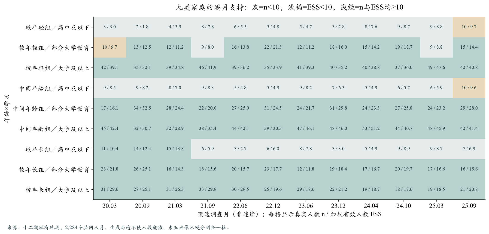
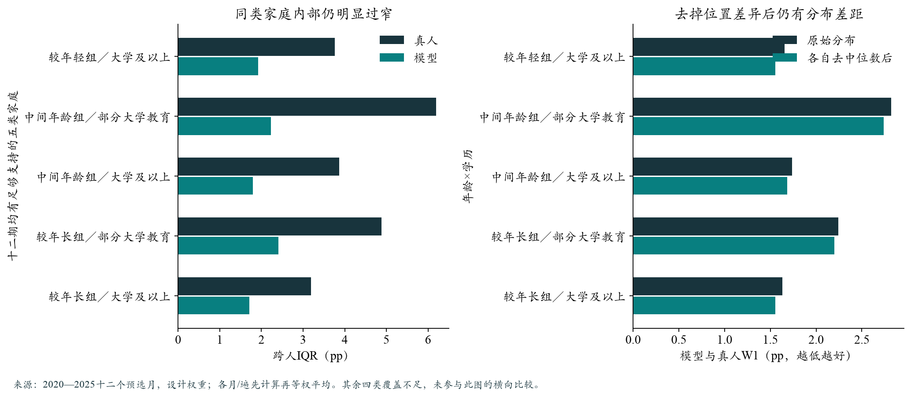
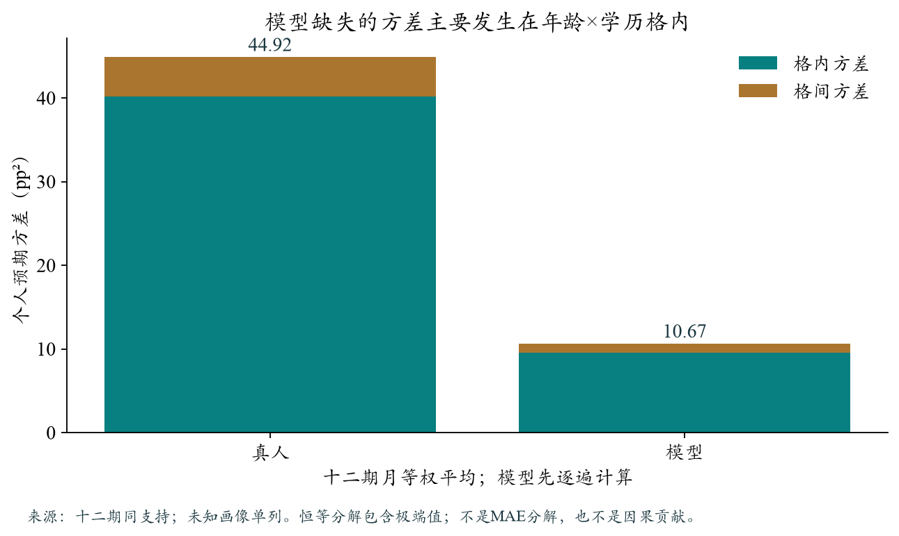
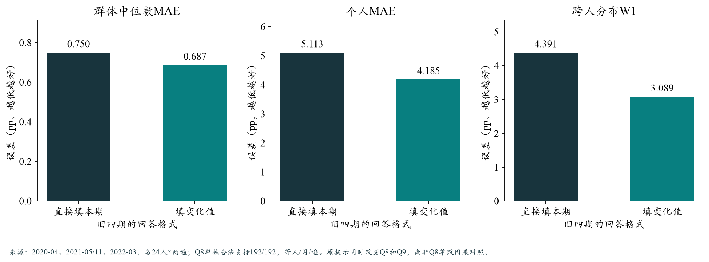
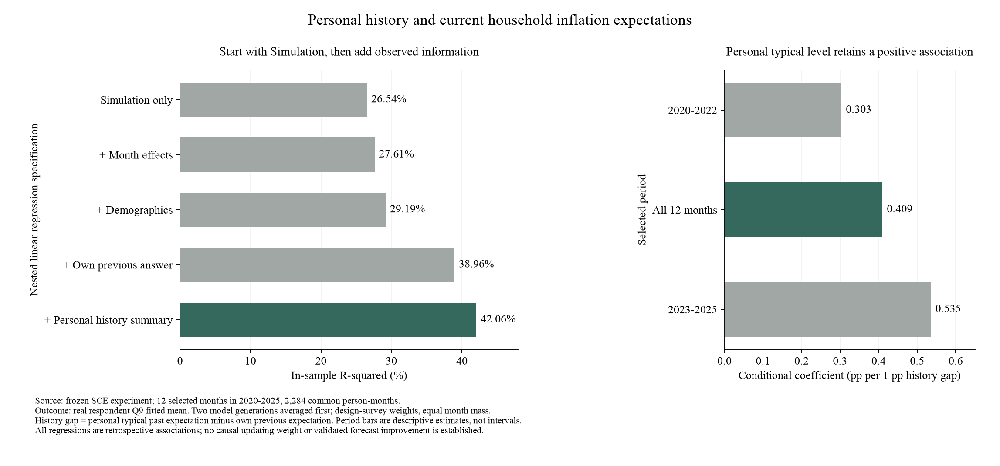
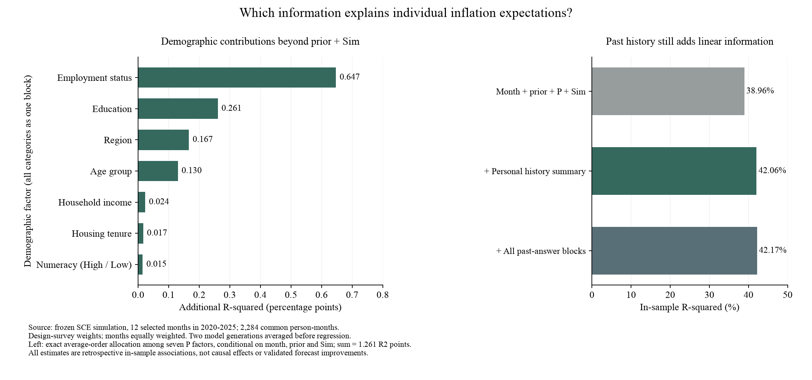
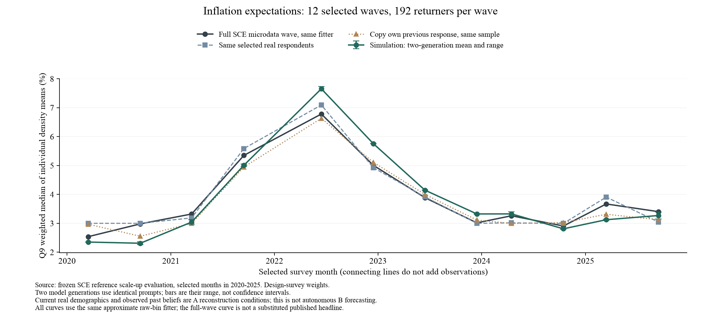
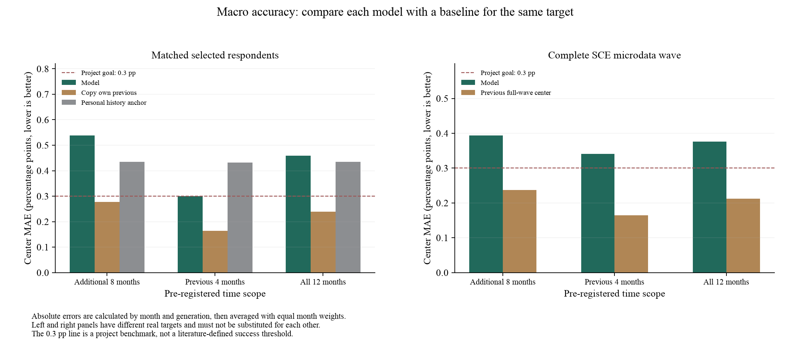
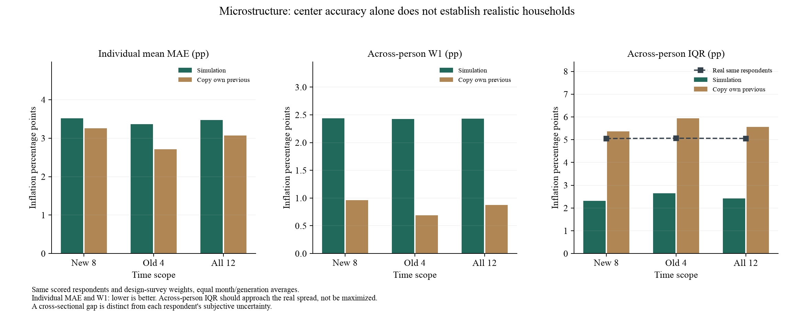
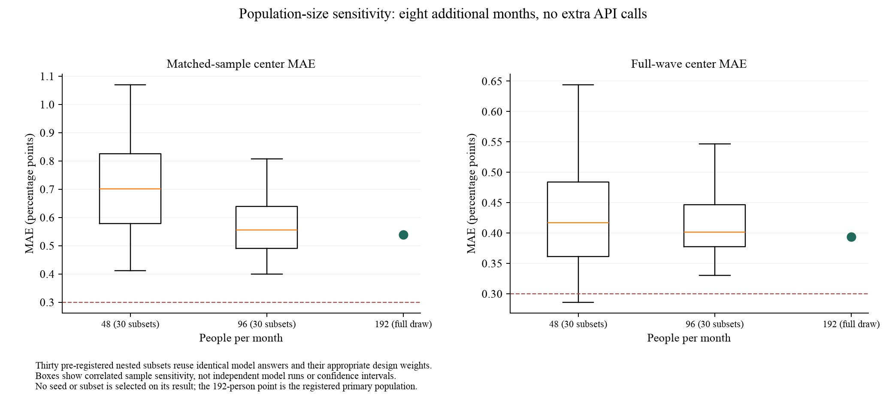

六格人口草案与Q8单改对照：离线准备完成 2026-10-19。本轮只做本地设计和干跑；新真实调用0，参考配置未改。新试验范围与$2预算已向用户发出确认，未获确认前不启动。
一、网格采用学历×是否在职 三档学历×在职／未在职，共六格；在职含休假，未在职保留退休、失业等原始区别，不等于失业率。年龄、收入看边际覆盖；数理、财务状态和退休等另作诊断，不全部相乘。未知独立保留。
这是抽样/扩展候选，不是声称学历就业已解释人的全部信念。每人保留原画像、先验与个人信息，六格不等于六个同质代表人。新Normal扩展尚未接入。
现有十二期支持：每格显示n／ESS 调查月 高中及以下／在职 高中及以下／未在职 部分大学／在职 部分大学／未在职 大学及以上／在职 大学及以上／未在职 202003 11 / 10.5 13 / 12.3 22 / 20.7 28 / 26.5 83 / 78.2 35 / 32.9 202009 11 / 10.8 14 / 11.5 41 / 37.6 32 / 30.6 64 / 59.6 30 / 27.6 202103 13 / 12.0 14 / 12.9 34 / 29.9 22 / 19.8 77 / 68.9 30 / 25.2 202109 16 / 15.0 7 / 7.0 31 / 28.3 18 / 15.2 89 / 81.9 30 / 26.9 202206 12 / 11.5 2 / 1.4 34 / 31.2 29 / 22.4 82 / 78.1 31 / 29.9 202212 10 / 9.8 6 / 5.8 49 / 38.0 27 / 22.1 76 / 73.9 23 / 16.2 202306 13 / 12.0 11 / 10.8 35 / 32.2 13 / 12.6 84 / 62.8 33 / 24.3 202312 9 / 8.2 4 / 4.0 44 / 40.1 24 / 21.9 89 / 79.6 21 / 19.3 202404 13 / 12.4 8 / 7.9 44 / 39.9 14 / 13.4 89 / 84.2 24 / 22.5 202410 10 / 9.4 16 / 15.2 43 / 40.0 24 / 22.9 76 / 70.7 23 / 21.0 202503 12 / 11.6 12 / 10.9 27 / 25.7 24 / 23.1 91 / 87.0 25 / 22.6 202509 19 / 17.7 8 / 7.8 37 / 35.1 23 / 21.7 79 / 76.1 26 / 24.8
共72格月，63个n≥10且ESS≥10；棕色为支持不足。低学历未在职仍最缺样本，不能从少数人稳定推断整组。阈值不是统计功效证明。未来每期192 Core示例从至少12人/格起步，余量按人口质量配置、格内随机抽样，记录π与调查权重/π；没有实际扩样或改旧权重。
二、这次格式实验固定人群，不应用新网格 四个旧开发月2020-04、2021-05/11、2022-03，各24人。直接填写Q8/Q9，对比只将Q8改成“本期减上期”、Q9仍直接填概率。两组共同P/E及先验逐字一致，各生成两遍，共384请求。缺上期Q8的一人仍直接填本期值；不造先验、不裁剪答案。
例：上期Q8为3%，本期填−1个百分点，程序恢复为2%。如果填−4，恢复为−1%，可以表示通缩。Q9依然必须是合法绝对概率。原回包、转换记录和恢复值分别保留。
旧真值中两个人月本期Q9缺失，已按缺失处理，其合法Q8继续评价。Q8等人/月/遍看中心、个人MAE、W1及变化；Q9加权中心与W1作为保护指标。Q8改善不能写成主Q9成功，不按小样结果自动升级。
三、执行准备与费用 23项定向测试通过，16个官方引擎确定性单元通过，384次格式转换往返通过，API调用0。沿用共用runner、预算门禁、DuckDB和评价，只新增Q8转换与旧真值兼容，未另造模拟器。
DeepSeek官方Flash，温度0.5、关闭思考、最多1024输出token、无自动重试；预计$0.46，保守预留$1.78，硬上限$2。官方页 当前标示V4.1-Flash-1017，因此两臂同期重生成；别名不代表固定权重。
有效运行包：outputs/sce_q8_only_trial_20261019_v3/。v1/v2为付费前修复缺失值适配所留存档，勿调用；原manifest未改。获批后执行两组并报告全部失败、逐月/遍变化和同支持基线；这仍是开发小试，独立验证另选月份/种子。
人口网格选什么：代表性、预期水平与概率表达分开判断 2026-10-19。无新增LLM/MCP付费调用，原配置未改。年龄×学历是先前的粗分组诊断，不是已经证明最优的Core/Normal扩展方案。
ConsumerSim实际怎样分层？ 论文§4.5.1 列出居住类型、年龄组、收入档、种族／族裔四个维度。其Persona还包含教育、住房、就业等信息，但不能把所有画像字段都说成扩展网格。该段未列具体切档边界，不自行补造；SCE缺少的字段也不能凭空迁入。
在我们的真人数据中，哪些变量更重要？ 复用2020-01至2025-10现有缓存；前段43,712、后段36,729有效人月。十类变量同时入模，按调查权重、每月等权并控制月份。固定完整模型样本，每次拿掉一整组变量，看月内R²损失；下表单位是R²百分点，不是通胀百分点。只作样本内线性关联，不报告因果或样本外排名。
变量整组 预期水平 2020—22 预期水平 2023—25.10 个人不确定性 2020—22 个人不确定性 2023—25.10 年龄 0.177 0.175 0.047 0.466 收入 0.007 0.077 0.664 1.943 性别 0.050 0.033 1.243 0.535 地区 0.042 0.076 0.212 0.201 就业状态 0.199 0.423 0.890 0.783 数理标签 0.008 0.001 2.632 2.463 细学历 0.473 0.118 1.449 1.931 Q1财务变化 1.690 3.824 0.287 0.496 金融风险偏好 0.236 0.420 0.173 0.295 一般风险偏好 0.083 0.354 0.603 0.497
预期水平： 财务变化在两段均居首，去掉后解释力减少1.69/3.82个百分点；就业、风险等次序随时期变化，年龄约0.18/0.18。个人不确定性： 数理标签居首（2.63/2.46），学历、收入也较突出。这里的不确定性是每个人Q9密度的IQR，不是人与人之间的IQR。
十类变量合计解释月内Q9个人均值差异约3.76%/6.99%，解释个人不确定性约19.39%/22.91%。这不代表其他信息都无用：未观测信念、私人经历、测量误差和非线性关系都可能留下差距。既有十二期回归显示本人历史更重要，但不能把两批不同支持的R²直接作贡献相加。
怎样修改设计？ 人口覆盖仍保留年龄、学历、收入等约束；预测力弱不等于可以省略代表性。 机制诊断分别增加财务／就业状态与学历／数理分组，先看支持再决定交叉，不把所有变量相乘成大量空格。 当前Q1是主观的过去一年财务变化，可能与通胀信念互相影响；不当成外生原因，也不直接变成提示词加减常数。B线须改用可得历史或另验合成状态。 先不冻结九格扩展或追加API；本轮只是补齐变量选择依据。财务状态注入和认知实验已做过，关联强也不等于旧注入方案有效。 方法限制与复算 本次十类不是SCE全部人口字段；财富、健康、家庭结构、直接采购角色等未统一纳入。完整模型与10月15日旧模型R²差小于10⁻¹⁴，四个模型支持完全一致。整组拿掉的独有贡献不可相加，相关变量会分享解释力；分类档位多也更易提高样本内拟合。没有估计这次排名的置信区间或在独立时期检验。官方发布Q9派生值用于本次关联，与模拟近似计分结果分别说明。
入口：scripts/analyze_sce_population_factor_priority.py --out outputs/<fresh_output>。权威输出：outputs/sce_population_factor_priority_20261019_v1/；公开聚合：同workstream的population_factor_priority_20261019.json。原回归、微观缓存和参考配置未改。
九类家庭与Q8独立复算：同类人内部差异仍是主要缺口
2026-10-19。复用十二期和旧四期原始回答，未新增LLM调用、未重新拟合Q9、未改旧配置。平台仅做免费元数据核查，付费调用0。
结论与下一步
网格化可以改善抽样和评价，但不能独自恢复异质性。 年龄×学历分组下，真人总方差约44.92、模型10.67 pp²；方差缺口中约89.3%发生在格内。这里只说明这套粗分组，不代表所有人口信息都不重要。高中及以下的三个年龄格最需补真实样本。 较年轻、中间年龄组都没有一个月份同时达到n≥10和ESS≥10；较年长组仅3/12期。不能从现在的数据给它们稳定排名。先定向补足Core，而非扩大复制出的Normal。变化值回答值得一次简化小试。 74份因Q9失败而被旧联合评价丢弃的Q8均可恢复；完整Q8同支持中位数MAE从0.750降到0.687，W1从4.391降到3.089 pp。但四月中一月恶化、一月持平，且个人和分布仍落后同支持照抄；这不是主Q9指标的改善。平台仍未提供已确认的同输入GPT-4o入口。 免费登记仍为gpt-4o-mini，当前顶层参数要求平台人口池，未见逐人自带P/E/本人先验和模型选择参数。没有执行问卷测试，不把别名目录当作可切换模型的证据。
1. 九格覆盖：哪里需要增加真实模拟人数？
沿用原始三年龄组和三学历组，不因误差挑分组；未知画像另记。2,304个计划人月中2,284共同可评分，未知交叉画像11人月。n<10隐藏指标；ESS<10标弱支持。以下组均值仅使用强支持月份，覆盖不同的行不直接排名。

每格为人数/加权有效人数；两遍没有使人数翻倍。 年龄／学历 共同人月 强支持月/12 模型中心MAE 照抄中心MAE 模型IQR 真人IQR 模型历史斜率 真人历史斜率 较年轻组／高中及以下 72 0 — — — — — — 较年轻组／部分大学教育 170 9 1.267 1.081 2.493 5.656 0.271 0.652 较年轻组／大学及以上 485 12 0.599 0.485 1.922 3.757 0.283 0.528 中间年龄组／高中及以下 88 0 — — — — — — 中间年龄组／部分大学教育 318 12 0.442 0.573 2.227 6.194 0.300 0.441 中间年龄组／大学及以上 512 12 0.422 0.477 1.799 3.870 0.279 0.476 较年长组／高中及以下 96 3 0.651 0.911 4.424 4.621 0.497 0.549 较年长组／部分大学教育 227 12 0.501 0.514 2.404 4.880 0.343 0.592 较年长组／大学及以上 305 12 0.439 0.660 1.706 3.186 0.363 0.747
历史斜率为各月/格内去均值后的协方差比，跨月等权汇总；它是描述关联，不是可直接部署的心理权重。五个全十二期有支持的格中，模型历史斜率均低于真人。
同一家庭从上期到本期的变化 以下五类均覆盖十二期。“更新”是本期个人Q9密度均值减本人真实上期值，不是把相隔数月的两个模拟月份相减。照抄的变化恒为0，所以它可以保住截面，却不能重建实际更新。变化W1比较整组更新分布；它较低也不证明模型判断对了哪一个人会改变。
年龄／学历 真人更新IQR 模型更新IQR 模型变化W1 照抄变化W1 真人变动≤0.25pp 模型变动≤0.25pp 较年轻组／大学及以上 1.895 1.438 1.244 2.165 24.3% 33.0% 中间年龄组／部分大学教育 3.518 2.770 2.133 3.786 21.4% 21.6% 中间年龄组／大学及以上 2.418 1.709 1.254 2.429 22.1% 28.9% 较年长组／部分大学教育 4.005 2.526 1.872 3.272 22.8% 25.8% 较年长组／大学及以上 2.166 1.804 1.196 1.847 23.5% 30.9%
所有十二期完整支持格中，模型的旧信念关联斜率都低于真人；但更新宽度和小改动比例需要分组看，不能概括为“所有人都更新过多”或“所有人都更新不足”。这些是现象定位，不是新的因果识别。
2. 差距主要是整体位置错，还是格内仍过窄？

只比较全十二期都有足够支持的五类；去中心后的W1不是原W1的可加组成。 这五类人的模型IQR均明显低于真人；去掉每组中位数位置差异后，W1仍保留大部分差距。因此，只调整各类人口的比例或给每格统一加常数，难以恢复完整分布。某些组中心优于照抄，不等于全国中位数一定改善：中位数不能线性加总。

总方差=格间＋格内；原始值未截尾。极端回答和测量噪声也会进入方差，不能全部解释为真实信念。 3. Q8变化值：把被Q9失败遮住的回答补回评价
同一旧实验384个请求，192直接＋192差值。按Q8自身判断后，两组192/192均合法；缺上期Q8的一人按原协议报绝对值，不补造先验。使用旧运行相同四位精度，旧115条Q9共同子样本的Q8结果复算一致。Q9完整差值有效率仍为118/192，旧失败结论不改。

完整96个人月×两遍；Q8等人主口径，逐月/遍计算后平均。不可与十二期Q9的0.459相比较。 月份 直接Q8中心MAE 差值Q8中心MAE 202004 1.900 1.150 202105 0.000 0.000 202111 0.350 0.250 202203 0.750 1.350
两次生成的等人中心效果反转：第1遍0.675→0.825pp，第2遍0.825→0.550pp。这是值得小试的信号，不是稳定胜者。
调查加权辅助Q8中心MAE为1.038→0.738pp，与等人方向一致；不据更好数字改换主口径。两遍中心误差差异和四期覆盖仍有限，没有据此宣称独立稳健成功。
同支持上，与照抄比较 有真实上期Q8的95个人月、190次生成，以下均为同支持等人/月/遍。个人和分布误差仍未胜照抄，说明仅改变表达方式尚未提供足够增量。
方法 中心MAE 个人MAE W1 变化W1 人际IQR 直接填本期 0.750 4.928 4.205 3.345 1.425 填变化值 0.725 3.998 2.886 3.033 3.125 照抄本人上期 0.900 3.415 2.093 3.415 3.250
4. 只选一项新对照：Q8报变化，Q9仍直接填本期
优先准备简化更新格式的独立候选：共同P/E和真实上期信念不变，对照直接报Q8/Q9，候选只把Q8改为变化值、Q9直接填绝对概率。先用旧四个开发月的小样、两遍作机制筛选；新批次同时重生成对照。主Q9中心、W1及合法率保留，Q8改善只作次要收益，不因格式信号直接升级主配置。
同时保留采购角色→可见价格的已备原型。现有菜单缺单独的清洁纸品/护理价格，食品主题路由也稀疏，下一轮不把这些尚未补齐的内容同时塞入格式实验。Q8若有收益而Q9无变化，只能报告Q8接口收益；主Q9仍需其他机制，采购角色—价格方向保留，不重试同一概率差值。
后续先冻结新批次输入、名单、模型和预算，再完成共用引擎干跑并申请明确外发授权。本轮没有启动新的付费模拟。随机新闻量另登记独立时期/种子，B递推和Q2扩展不挤掉主线验证。
方法、来源及局限 统计量均复用共享evaluation模块；没有因结果合并格或改变权重。方差分解不能分解中位数MAE，年龄×学历格内仍可能有收入、数理、私人信息和测量差异。四期Q8的原提示同时改变两题，因此需要Q8单改的真实对照来识别接口作用。所有这些月份已看过，只能作开发。
权威新输出：outputs/sce_advisor_diagnostic_20261019_v2/；v1为分位数边界与旧口径对齐前的草稿，不用于结论。平台免费证据：data/raw/mcp_checks/2026-10-19_advisor_free_v1/。原个人记录与回包只留本地。
上期财务前景Q2：总体误差不变，尚无稳定增量 2026-10-17。2020-03、2022-06、2023-12、2025-09各48人，两组各两遍；768次真实请求全部有效、无接口错或重试，费用估$0.863/$4。两组只差本人上期Q2财务前景事实，没有规定通胀方向，也没有加入本期Q2、Q1或心理供体。
主加权Q9中位数MAE：0.4591→0.4593pp，几乎不变。 个人均值MAE3.581→3.673，跨人W1 2.505→2.660，更新W1 2.268→2.493。人际IQR2.818→2.985，对真人5.282，宽度增加不等于分布更像；Q8中心1.05→1.00的点值收益另报。
中心误差：2020-03为0.517→0.459，2022-06为0.564→0.308；2023-12为0.622→0.750，2025-09为0.133→0.321。两好两差，三个主要配对差异区间均跨0。暂不升级、不在同四月继续改措辞。照抄在本48人样本中心0.774、W1 1.898，不能与全国或十二期基线混用。
共用流程已真实跑通： 冻结提示、授权/预算门、官方SocioVerse2引擎、调用审计和同一评价层复用；以后主要换小型信息适配器与配置。材料准备0.34秒，API约4.6分钟，评价约20秒；首次工程开发不包含在这些计算时长中。下一项单独准备心理状态，暂无在跑任务。
设计、全部结果与边界 · 共用流程说明 · 任务板 个人常态的跨期检验：有收益，也有取舍 2026-10-17。读取已有回答与计分缓存，计算约0.17秒，新增API调用0；没有产生新的LLM回答或修改默认配置。使用共同2284回访者人月，按时间早期拟合、后期评价。
逐年前推后八期，上月＋更早个人均值相对照抄，个人RMSE从5.750降至5.258pp；但个人MAE从2.862增至2.950，同样本中位数MAE从0.196增至0.494，跨人W1也变差。给上月＋Sim再加历史，有小幅个人/分布收益，中心误差却从0.256增至0.327。这里的中位数是所选回访者，不是官方全国指标。
这说明历史有信息，但MSE最优规则并不保证中位数或整个分布更准；已有十二期全部看过，不能称新盲测。暂不升级，下一步检查上期Q2。常规轮改为复用缓存、只核新增、定向测试，完整独立复核留到里程碑或异常。设计、全部结果与效率约定 · 任务板
剩余优化方案：先查个人常态，再查财务前景
2026-10-17。当前既有总体水平偏差，也有人与人过于接近的问题。总体加权可以改善前者，不能改变个人回答。下面是现有证据支持的执行顺序；本次仅整理计划，未新增API调用或切换配置。
完整清单、依据与停止条件 · 任务进度 · 个人历史与心理代理诊断 第一优先：两项先用现有数据检验的方向
个人历史常态。 除了上个月的判断，一个人还可能有惯常的高低位置。历史摘要已经发给模型，但仍有模型没利用的关联信息。先用早期拟合、较晚时期评价，与照抄比较；若跨期仍有收益，再设计如何让模拟保留这种差异。家庭财务前景Q2。 它问未来一年财务会变好还是变差，尚未做真实输入实验；上期Q2在现有回归中另增约0.95个R²百分点。先检验跨期稳定性，再准备只增加这项事实的对照。它不是一般人格乐观，也不能直接转成通胀加减分。不要与Q1混淆： Q1问过去一年财务变化，已经做过模拟。开发月中心曾改善，但另四月加权中心MAE从0.290升至0.476pp；个人误差与分布略好，暂不升级默认。回归有增量也不等于Simulation已改善。
历史不足的处理： 2284个共同回访者人月中，2013个至少有两次有效历史，271个只有一次；这不是全国人口比例。多期者保留上月原Q8/Q9并另列更早Q9摘要与次数；一两期者如实列回答，不叫长期常态；零历史者另作有标记的合成初始化。现提示已含历史摘要，下一步研究如何利用它。具体输入例子、Q1/Q2区别与心理准备说明 。
第二优先：保留，但先补机制和数据
人格、乐观与风险偏好： 先用SCE本人风险题；外部GSS/MIDUS可提供合成分布参考，不能冒充同人心理实测。MIDUS真实群体汇总仍待用户本地执行并核对使用条件。购买频率与价格体验： 补收入/家庭状态更新、跨年CE与类别价格匹配。家庭购买日数不等于本人购物责任，频率标签不等于实际感受到的涨价。补E的具体缺口： USTR关税政策、Google Trends公众关注、Household Pulse家庭压力先查字段、覆盖和历史版本；不将所有信息统一灌给每个人。并行与收束
总体组合继续保留纯模拟、延续和组合三方比较；拟权与评价分开，同时报告MAE/RMSE。微观仍检查W1、人际分歧、个人更新及Q9不确定性。新参与者、权重与B连续递推仍是必要工作，不能由扩大回访者样本替代。
接下来顺序： 个人常态零API检查 → 上期Q2跨期检查 → 只选一个有支持的机制，列输入、对照与预算 → 在未用于调整的时期验证 → 收束研究包。数理题换说法、历史长叙述、概率取整和继续换模型暂缓。具体日程沿用ROADMAP，不要求10月16—23日由用户每日推进。
上月真实指标＋本月模拟指标：加权能降低多少误差？
2026-10-17。复用十二期、每期192人的两遍模拟；新增API调用和费用均为0。不改原始问卷、计分器与默认配置。下面区分同十二个月内选最优权重 与仅用先前年份拟权、再向后评价 。
组合＝历史权重×历史SCE＋模拟权重×本月Simulation。 两权重非负、合计1，不加截距。分别按MAE或MSE拟合；与ConsumerSim总体加权形式 相同，但重新估计SCE权重。
完整结果与方法 · 聚合数值 · 个人历史与财务前景诊断 · 工作清单 1. 对官方全国SCE指标：能明显改善纯模拟，但只略优于历史延续
目标是纽约联储公开的一年期预期首发值；历史锚取各实验截止前最近已公布的SCE指标。它通常是上月，但2020-09、2022-06、2024-10的截止前上月值尚未发布，分别使用2020-07、2022-04、2024-08。不能提前取尚未公布的值。
按MAE拟权，比纯模拟下降约39.0% ；但比历史延续只下降0.013pp，约5.6% 。按MSE拟权，比延续的MSE下降约15.6%，MAE下降约3.7%。所以组合有用，但改善的主要部分来自历史值本身很准，不能全部归功于Agent。
这些是同一批十二个月选权重、同一批月份计误差 的最佳拟合，不是已经验证的未来表现。逐遍计算误差后按月等权；两遍不算24个独立月份。
2. 先拟权、后评价：组合增量仍有限
先用2020—2021四期定权重，固定用于后八期：MAE和MSE目标都选中模拟权重0，因此后八期MAE是0.3125pp，与历史延续相同。全十二期回头拟合的正权重，并不是早期数据就能选出来的。
再做逐年前推：预测2022只用2020—2021拟权；预测2023用2020—2022，依此类推。以下都评价同一组后八期：
按MSE拟权的前推MAE约0.297pp，是一个可以记录的小幅收益；不能称为稳定低于0.3：只有八个已看月份，2025年这两期平均仍约0.339pp。所有分期都是事后时间顺序检查，不是新登记的独立盲测，未证明显著胜出。
3. 与此前“0.376pp”对齐：不是换口径制造提升
此前0.376pp来自完整微观波次、冻结近似计分器重算的Q9中心 ，与官方公布值有小差别。沿用那套口径，加权结果为：
此口径相对纯模拟改善约44.6%，相对延续只改善约2.0%。微观历史资料当时尚未及时公开，属于A回顾分析，不作为严格B的可得输入。两套口径分别比较，不交叉选择最有利数字。
补充：模型是否更擅长减少大偏差？ 固定同一套按MSE拟权的组合：十二期样本内相对历史延续，MAE下降3.75% ，RMSE下降8.12% ，MSE下降15.58% 。但MSE是平方单位，不能直接用它的降幅与MAE比较；RMSE与MSE拟权结果相同，RMSE仍保留通胀百分点单位。
逐年前推后八期，MAE下降5.04%，RMSE下降3.07%，因此“平方损失相对优势更强”没有在RMSE上稳定保持。十二期的平方误差净改善主要由2022-06贡献：该月绝对误差0.500→0.184pp，其平方误差减少大于十二期净减少之和（约144.3%），其他月份抵消部分收益；2022-12则从0.200增至0.330pp。该月历史锚是截止前最近公开的2022-04值，较调查月落后两期；这是解释增益时需考虑的因素。不能据此说普遍修复了大误差。
ConsumerSim §4.6/§4.7及附录§11 ：同时报告MAE、RMSE、Pearson及Spearman，在2024-01至06验证期按RMSE选权重。对标应同时保留组合、纯模拟和延续基线，CCI与SCE不直接比绝对误差点数。详见同组合逐月分解 。本轮不改变项目主指标。
4. 对项目的意义
可以保留一个宏观组合预测层 ，分别展示纯Agent、历史延续、历史与Agent组合。它确实降低总体误差，但还没有建立稳定的额外预测优势，也没有改变任何人的Q9概率、人际IQR或W1；组合值不是原始个人回答直接聚合的结果。
本轮不冻结全期最佳权重。后续仍优先检验个人常态和财务前景机制；正式检验组合时另登记拟权时期与独立评价期。当前模拟含回顾性P及本人真实历史问卷，规范总体公开锚不能将原模拟直接变成严格B预测。
怎样核验与复算 MAE在目标折点与端点精确求最小，MSE解析求最小并限制在0至1。两套口径以100001点密网格独立检查，MAE最小值差<3.5e−8pp，MSE差<5.3e−12pp²；已知权重的人工算例通过。首发新闻稿哈希及公开日期核验，15份待审文件未变。核验收据 ；复算入口见完整报告 ，不需新API。
个人历史是否还有用？答题经验与财务前景的进一步检查
2026-10-17。复用十二期模拟，2284个共同可评分个人月，两遍回答先平均；沿用调查与抽样权重，各月等权。本轮新增API调用和费用均为0，没有改模拟配置。目标为真人本期Q9概率分布派生的个人均值 ，不是Q8，也不是未来实际CPI。
完整方法与解释 · 全部聚合数值 · 当前清单 · 上轮因素分解 1. 先看Simulation本身：R²是26.54%，不是0.9%
此前约0.9个R²百分点，指已有上期、人口、月份信息后，模型额外 提供多少解释力。这次换成先放Simulation、再放其他信息，结果如下。进入顺序改变贡献分配，不改变同一完整模型的最终拟合。
这是事后样本内线性回归 ，不是原始模拟准确率，也未证明新配置能降低预测误差。总体中位数MAE、跨人分布和个人变化仍须另行评价。

十二个选定月份，2020—2025。左图为同样本内解释比例；右图为描述性系数，没有置信区间，不能直接当心理更新权重。 2. 值得继续查：人不只有上月判断，还有一个惯常水平
控制上期、模型、人口和月份后，“过去常态−上期回答”每高1个百分点，本期真人预期平均高约0.41个百分点 。例如，上月都回答4%，惯常水平6%的人，相对惯常水平4%的人，对应本期平均高约0.82个百分点。这是条件关联，不是让模型按0.41强制调整。
该系数在2020—2022所选时期为0.30，2023—2025为0.54；逐一去掉某个年份后仍为正。常态原本包括上期，最多11次有效历史回答；严格去掉上期、仅用更早回答后，关联仍为正（0.33，2013人月）。后一个样本不同，其R²不直接比较。上述检查都使用已经看过的数据。
这可能来自稳定信念、上月暂时偏离后的回归，也可能是多期平均减轻填答噪声。回归无法区分原因。此前固定一半权重的历史锚并未普遍胜过照抄，不能仅凭此系数就宣称找到新机制。
“相对别人”或“相对真实CPI”的高低，有没有新信息？ 相对同月样本常态中位数，可描述这个人习惯偏高还是偏低；它不是全国水平。若已控制月份，减去同月共同参照只改变零点，R²不变。减去当时已公布CPI同比亦如此。高于当前CPI不是预测误差 ：一个问未来12个月，一个描述过去12个月；本轮未使用未来实际CPI。
3. 答题次数不能直接写成“这个人更关注通胀”
有效Q9次数与实际参加调查次数不完全相同：127人月存在差别。改用官方tenure所反映的既往已完成次数，条件系数为+0.165个百分点/次 ；没有出现“老手预期必然更低”的简单关系。对个人主观不确定性做相应控制后，也未出现简单的负向次数关系。
这不是否定学习：原有信念可能已包含学习结果，而回归将其控制；次数还混合留在面板中的选择差异，且此样本全是回访者。已有问卷学习研究 支持进一步检验，不能用本轮条件系数代替其识别。当前宜将次数用作历史覆盖与信息质量说明。
4. 心理因素：先从同一受访者真实回答入手
SCE的Q2是未来一年家庭财务前景 ，不是一般人格乐观；QRA1/QRA2是金融和一般风险偏好。将它们分别加到42.06%的完整历史回归中：
本期Q2中，预计财务“差很多”相对“不变”的条件预期高约2.62个百分点；“好一些”低约1.01。控制Q1过去财务变化后，Q2仍有约0.93个R²百分点的增量。但五档关系并非各期都严格单调，尚未做跨期检验，不能预设每档固定加减，也不能说悲观导致高通胀预期 。反向影响、共同经济冲击和填答习惯都可能参与。
外部GSS/MIDUS来自另一批人。它们能提供合成人格的分布参考；按年龄、学历匹配，无法知道SCE这个人真实的心理与通胀答案关系。本轮没有把供体人格冒充实测回归，也未读取MIDUS受限个人记录。统计匹配的识别限制 。
统计与核验说明 Q2五档、风险七档以分类变量进入，缺失单列，不强加线性。联合风险模型的两列缺失指示相同（52秩/53列）；联合拟合与R²可识别，不解释这两列的各自系数。其余所列主回归满秩。没有报告因果效应或显著性。12份Q2样例与独立读表器一致，历史块R²与上轮差约1.1e−16，15个待审文件未变。详见核验收据 。
5. 下一步：先验证机制，再决定是否新增模拟
个人常态优先。 早期估计、后期检验，检查它能否在照抄上期之外改善中心、跨人分布与个人更新。十二期已看，称事后前推诊断；真正独立月份另登记。财务前景其次。 先检验上期Q2跨时期是否稳定，再准备同事实的输入对照；将实际观点与硬设通胀偏移分开。本期Q2不直接用于严格B。外部心理与新E衔接Kimi。 USTR、Google Trends、Household Pulse先查口径、覆盖与历史版本；本轮不新增付费取数。结论：个人历史常态与经济前景是下一步有数据依据的候选；目前还不是通过验证的新配置。 当前没有追加Simulation。完整说明、系数解释与复算入口 。
哪些因素还有额外解释力？共线性与残余信息检查
2026-10-17。复用2284个人月的原始计分；两遍模型回答先平均，调查×设计权重按月归一、12月等权。新增API调用0，无Q9重新拟合，不改变原实验或默认提示。下文R²是解释平方差异的统计量，不是通胀误差，也不是因果贡献。
1. 个人层面有信息重合，但不能用共线性解释全部差距
模型回答与本人上期预期的加权相关系数为0.724；扣除月份差异后为0.734。把模型本期值对月份、上期值及人口变量回归，这些变量能解释模型回答的64.35%，对应加权VIF为2.81。完整设计矩阵36列、秩36，没有完全共线性。这些结果表明有较多重复信息，不能据此说独立贡献很大、只是被回归隐藏了。
控制上述因素后，模型与真人剩余部分的相关系数为0.121，平方为1.46%；这是对尚未解释部分 的线性解释比例。换算到全部差异，增量就是0.906个R²百分点。之前用“模型相对上期改动”作自变量时，VIF为5.53；换成模型本期值后为2.81，但两种写法的剩余信息和拟合完全相同。因此VIF受变量表达方式影响，不能单看一个数决定机制是否有效。VIF方法参考 。
补充：只控制月份时，加入模型回答可使R²从3.17%升至27.61%；加入本人上期值可使其升至36.65%。所以模型包含信息，只是其中很大一部分与既有信念重合。以上顺序不是唯一贡献分配。
2. 七类人口变量分别贡献多少？
固定月份、上期值和模型判断后，对七类人口变量的所有加入顺序求平均，把重叠解释力按同一规则分配。每类变量的全部分类一起进入，缺失类别保留。表中单位都是R²的百分点 ，不是预测误差pp。就业状态分为7个虚拟变量，自由度较多，样本内排名还需防范拟合偶然性。
七类因素合计增加1.261个R²百分点，即R²从37.70%升至38.96%。平均顺序贡献可以加总，最后一列独立删项损失不能相加，因为因素之间的信息有重合。方法参考Grömping（2006），Relative Importance for Linear Regression 。这是一种明确的统计分配规则，不是各因素真实因果作用的唯一分解。
就业和教育居前，但没有哪一个静态标签提供很大的额外解释力。分2020—2022/2023—2025两段做事后删项，去掉就业的R²损失为1.232/0.492个百分点，教育为0.130/0.485；排名与大小存在时期差异。数理标签对本期预期水平的剩余贡献小，不代表对主观不确定性或填概率习惯也小；这些不是本次的回归对象。
3. 更值得查的残余信息：个人过去的常态信念
继续检查了三组已经给过模型、但上次回归尚未单独纳入 的历史信息：过去常态水平与答题次数、上期概率分布的宽度/位置、上期Q8点值与Q9均值的差。没有加入本期答案或新画像。
原完整回归R²为38.96%；只加过去常态水平/次数摘要，升至42.06%，增加3.10个百分点。 只加上期概率分布的宽度/位置，增加0.096个百分点；只加上期Q8与Q9的差异，增加0.039个百分点。 三组同时加，R²为42.17%；单独的三个增量不可相加。 过去常态水平是截至上期的有效历史均值（包含上期），按实际提示中的一位小数取值，并保留有效答题次数及是否有足够历史。它不是新增的本期信息。该结果提示：模型当前输出还没有在线性意义上概括全部历史信息；值得查个人稳定成分如何保留。它也可能捕捉稳定填答习惯、上期测量误差的平滑等，不能直接说LLM没有读到历史、也不能把回归系数直接当心理更新权重。目前仅为样本内探索，未证明新增配置或跨期预测改善。

2284个人月、12个选定月份。左图是固定月份/上期/模型后的平均顺序分配；右图是嵌套回归的样本内解释比例。均不是因果效应或预测误差的改善幅度。 4. 中位数回归的高R²应怎样理解？
之前89.41%的宏观R²只来自“常数＋模型中位数”，没有把人口因素或利率放进去，不能从那个数读出它们各自贡献。本轮补做12点的描述性比较：只用同样本本人上期值聚合中心，R²为95.29%；与模型中心一起使用为96.13%，增加0.847个百分点。两个自变量的相关系数达0.985，宏观层面的共线性比个人回归更明显。
联合回归中模型中心系数为负（−0.449），上期中心系数为1.634；只有12点且高度重合，不将该符号理解为反向经济机制、不据此部署负权重，也不把同12点拟合当独立校准成功。高R²说明时期高低比较一致；此前MAE和基线结论保持。
5. 还剩的61%，不能全部称作遗漏信息
完整回归中，按残差绝对值排序最大的1%记录贡献约37.4%的加权残差平方和，最大的5%贡献约69.0%。R²对少数极端回答较敏感；这不证明极端回答错误，本轮也没有删掉它们或借删样提高指标。未解释部分可能混合真实遗漏信息、非线性/交互作用、个人变动、填写噪声和计分测量误差；当前没有估计可达到的R²上限。
全国利率/CPI等每月仅一个值，与个人回归中的月份指标完全重合。当前未逐项估计新闻、CE份额、合成央行信心或各类价格的贡献；不能据此判断它们不重要。12个时间点也不支持把大量宏观因子一起放进去做可靠的贡献排名。
下一步
优先查“过去个人常态与上期临时偏离”能否稳定解释真人更新；按时期和人群检查，使用时间向前的回看，防止只解释这批样本。 对就业、教育的剩余关系核查类别人数、少数极端回答和跨期方向，暂不把类别系数写成固定心理规律。 若线索稳定，再审定个人信念更新机制及新验证月份；原始Agent结果、回归校准、基线保持分报，不追加本轮付费模拟。 完整因素分解与共线性结果 · 历史信息增量 · 上一轮回归说明
抽样范围、先验提示与回归诊断
2026-10-17补充。只复用已封存回答与计分，新增API调用0；不改变原实验配置、评价门槛或默认机制。平台接口后续调研由Kimi负责。
1. 192人究竟代表谁？
每个目标月，从该月与紧邻上月都参加、上期十档概率及拟合有效、面板时序符合条件、画像可用且调查权重为正的回访者中，按年龄×收入分层抽192人。各月合格池为795—1053人；每月重新抽，不是同一192人横跨六年。以2020年3月为例，完整波次1300人，合格池1053人，再抽192人；没有根据本期真实通胀答案选人。
“同样本”指模型模拟这192人的条件，再与这192名真人本期的回答比较。评价权重为原调查权重÷该层入样概率，能校正从合格池抽192人的步骤，不能自动补回首次参与者、隔月回归或上期概率不合格者。当前问题是已有个人历史时，能否重建该人的本期回答 ，不能直接称全国代表性预测。完整SCE波次另行比较：全12月中心MAE0.376pp，对同样本为0.459pp；两者不同，不能择优替换。
重复调查本身可能改变信息关注和回答。Kim与Binder（2023）报告回访者往往有较低的通胀预期与不确定性，说明新参与者不能默认与回访者相同；该论文不证明我们当前样本偏差的具体方向或数值。原始论文 。后续须分新进入者、连续回访者及缺口人群检验，再设计初始化与覆盖修正。
2. 现有提示已经怎样强调个人信念？
实际提示不仅列出本人真实上期Q8和完整Q9十档，还有更早回答的均值/次数摘要。原文明确写：
Your previous survey records the belief you formed last month using the information you had at that time. Treat it as the starting point for your current view.
随后说明预测窗口推进一月，允许保持、上调、下调，不规定幅度。因此，不能将差距归为“没有强调先验”。公共数字/新闻较长、个人叙述较短可能影响注意，但字数不是证据，也不能证明原有信念被哪个信息覆盖。需要固定全部事实，只改变呈现的受控实验；已有先验措辞试验也应先复用，避免反复试同一改动。现有回归只表明模型保留个人差异较弱，不能直接识别原因。
3. 把模型回答放进回归，有什么用？
本轮先做小规模离线诊断：两遍模型Q9个人均值先平均，每个人月只保留一行，共2284行；每月内部使用调查×设计权重，再将12个月等权。因变量是真人本期Q9拟合均值，依次加入月份、本人上期均值、人口特征，以及模型相对本人上期的改动。给定上期值，加入“模型改动”与加入“模型本期值”在线性代数上等价。
月份＋本人上期信念：样本内R²为36.65%；再加模型改动为37.70%。 再控制年龄、教育、收入、数理能力、地区、住房、就业：38.06%；加模型改动后38.96%，增加0.91个百分点。 模型改动的条件系数约0.319；这是关联系数，不是应写入提示词的更新权重。共线性、测量误差与遗漏因素均可能影响系数。 12个月群体中心的简单回归R²为89.41%。这说明选定月份的水平变化相关较强，不代表原模型MAE小或已胜过延续基线。用这12点拟合两个校准系数的结果，不能再作为同12点的独立准确性检验。 结论：模型回答包含一些上期信念与已纳入人口变量之外的线性信息；目前增量较小。不能说剩余61%都能被P/E机制解释，也不能由某变量系数非零证明模型“没看懂”该变量。
额外做了四次按年份向前的简单双模型回看（2020—2021起训，依次检验2022—2025）：加入模型回答的MAE在3年改善，但RMSE仅2年改善，增量不稳定。全部月份及输出此前已看过，所以这是事后诊断，不是新增盲测或B预测验证。逐年完整数字保留，不择优展示。
4. 为什么暂不把利率等一股脑加进去？
个人层面加入月份控制，是为了比较同一经济环境下不同人的差距。全国利率/CPI每个月只有一个值，与月份控制完全重合；增加人数不会增加这些宏观变量的独立时间样本。宏观层面只有12个月，暂适合少量变量和散点诊断，不适合复杂回归或强显著性结论。
下一步先分解本人上期至本期的真人/模型改动，再检查残差与数理、教育等的关系；若需检验利率、价格或政策的独立增量，应先限定少量理论驱动变量，再在更多月份和未参与调整的时期验证。回归校准与原始Agent输出单独报告。
完整聚合回归结果 · 独立数值复核 · 原12个月冻结结果 · 当前任务清单
十二个月扩大验证结果 1. 本次完成了什么 2020—2025每年预选两个月，共12个月；每月192名回访者，同一参考配置生成两遍，计划4,608次请求。实际完成4608次，原始回答与轨迹逐项核验；有效率99.96%。模拟token费用估算$5.155，低于授权$21.50，运行约24.1分钟。新闻分类另计约$0.711。金额均非平台账单。
输入沿用人口画像、合成CE支出、美联储信心、公开价格/新闻/政策、本人真实上期Q8/Q9和更早摘要、信息发布时间标签及直接作答。未新增Q1、数理实答、购买频率或更新规则。人口来自完整合格回访者池，按年龄×收入分层；评价用调查权重÷入样概率，模型不接收权重。
2. 先看新增八个月，而不是用旧月好结果拉低平均 主要检验的新增8个月，同样本Q9中心MAE为0.539pp，未达到本项目0.3pp的平均误差目标；同样本照抄本人上期为0.277pp。模型点估计高于或等于该基线，模型减基线的误差差为0.261pp，按年份分组重抽的探索性95%区间[0.078, 0.457]。区间衡量这组有限时期下的不确定性，不是未来准确率保证。
新增8个月中，有1/8个月的两遍平均误差≤0.3pp，最差月份0.831pp。整体平均达标与每个月稳定达标不同。
单位均为通胀百分点。逐月、逐遍先取绝对误差，再按月等权平均；不是将多个月预测先平均后计误差。旧4月、新增8月、全12月不择优替换。
原4个月扩大到192人后为0.300pp，接近此前48人的0.290pp；主要差距出现在新增时期。扩大人数与扩展月份检验不同问题，不能把整体变差简单解释为人数增加。
3. 同样本拟合与完整SCE重建必须区分 新增8个月，模型对完整SCE微观波次的中心MAE为0.394pp，完整波次上月值延续为0.237pp。同样本中心误差与这一指标不能互相替代。完整波次也由同一近似计分器重算，不是直接换用官方发布headline。
每月带符号的偏差分成：模型−所抽真人、所抽真人−完整合格回访者、合格回访者−完整SCE波次。三项相加等于模型−完整波次；只有带符号差可以相加，绝对误差不可相加。这用于观察抽样/回访覆盖与模型误差是否抵消，不是因果归因。
4. 个人分布是否更接近 新增8个月个人Q9均值MAE：模型3.519pp，对照抄上期3.253pp；跨人分布W1：模型2.439pp，对照0.965pp。模型人际IQR为2.310pp，真人为5.050pp，照抄为5.370pp。人际IQR要接近真人，不应以越大越好。
模型变化分布W1为1.551pp；个人主观概率IQR误差为2.941pp。十档中的所有通缩概率都填0者，模型占7.0%，真人占54.6%。跨人分歧与同一个人的主观不确定性是两种不同对象。
5. 人口规模与分组检查 同192份回答中，预先固定30组48⊂96⊂192子样本；不追加API，不选择表现最好的一组。以下范围是同一批回答的抽样敏感性，不能当作30次独立模型实验或置信区间。
- 每月48人：30组同样本MAE的中位数0.701pp，2.5%—97.5%范围[0.416, 0.989]；对完整波次MAE中位数0.417pp，范围[0.289, 0.580]。
- 每月96人：30组同样本MAE的中位数0.555pp，2.5%—97.5%范围[0.414, 0.773]；对完整波次MAE中位数0.402pp，范围[0.331, 0.530]。
年龄、收入、数理、教育、地区、住房、就业均按预设分组记录。每月每组不足3人不报告该格指标；缺失格不填补，分组差不能解读为该特征的因果影响。详见summary.json中的prespecified_descriptive_groups。
新增8个月，高/低数理组中心MAE为0.410/1.319pp，个人均值MAE为2.950/4.556pp；高中/大学组中心MAE为1.398/0.513pp。差距提示应重点检验这些群体的信息理解与概率表达，尚不是控制其他特征后的因果效应，也不表示之前具体答题提示的效果已得到验证。
6. 目前最清楚的机制线索 事后复用已计分回答，扣除月份共同水平，对本期与本人上期信念做加权线性回归。全12月平均斜率：真人0.598，模型0.359。直观上，上期信念高1pp的人，本期真人仍平均高约0.60pp，模型保留约0.36pp的差距。模型保留了部分个人排序，但跨人差异收缩较强。此项只是描述关联，不是因果权重或可直接部署的更新系数；一年期预测窗口重叠11个月也会产生持续性。
模型在2020年3/9月、2021年9月、2025年3月偏低，在2022年6/12月等时期偏高。全12月平均带符号偏差-0.045pp，但MAE为0.459pp，正负偏差相互抵消；单加统一常数不足以消除跨时期差距。
下一步优先用已有轨迹定位哪些家庭改变过多、哪些月份更新方向错误，再审定历史持续性与新信息反应的机制。扩样减小了抽样波动，当前配置仍未显示额外信息的稳定预测增量。新机制需在开发期估计、未用于调整的时期检验，不能用本次12月调好再称独立成功。
7. 有效范围和下一步 Q9共同可评分2284/2,304个人月，真人缺失或不可拟合18个人月，任一遍模型Q9失败2个人月；两者可能重叠，不能将真人缺失算作模型失败。Q8独立评价，不混入Q9中心。
这是一项使用真实本人过去问卷和当期回顾性人口画像的A条件历史重建。每月各自重建，不是连续12月自主更新，也不是严格事前B预测。模型训练知识、受访者覆盖、合成CE/信心与新闻历史版本的限制仍保留。
本轮结果不用于再改这套提示或选择月份。先区分宏观水平、微观分布、抽样与覆盖差异；若转向B，须另做合成人口、初始信念、连续递推和误差累积验证。
图表与复算 
十二期中心变化；冻结评价的聚合图，非官方headline。 
两种目标与各自基线；冻结评价的聚合图，非官方headline。 
个人误差与人际分布；冻结评价的聚合图，非官方headline。 
预设48/96子样本敏感性；冻结评价的聚合图，非官方headline。 原始聚合评价：/Users/wushuyue/Documents/科研/DISC/socioverse_challenge/outputs/sce_reference_validation_evaluation_20261017_v1/summary.json
执行与费用：/Users/wushuyue/Documents/科研/DISC/socioverse_challenge/docs/workstreams/20261017_reference_scaleup/execution_receipt.json
评价入口：scripts/analyze_sce_reference_validation.py（新输出目录；0API）
图表入口：scripts/plot_sce_reference_validation.py；本文件由report_sce_reference_validation.py生成。
执行前方案与准备记录（本轮已完成） 2026-10-17。最终输入和24个官方引擎离线检查全部完成，本批24个真实运行单元及评价均已完成，实际结果见本页上方。 新闻分类已完成，以下保留执行前方案，不能替代上方的实际结果。此前约0.29pp只来自4个月、每月48人的共同参考组；这次检验扩大后能否保持。
本轮配置 月份：2020年03/09、2021年03/09、2022年06/12、2023年06/12、2024年04/10、2025年03/09。每期192名回访者，各生成两遍，共4,608次请求；DeepSeek官方Flash、温度0.5、关闭思考、无自动重试。只使用共同参考配置，不增加Q1、认知实答或购买频率新块。
每月从完整合格回访者池按年龄和收入比例分层抽取，固定种子；评价使用调查权重与入样概率。各月合格池795—1,053人。权重和真实ID不发送模型。同192份回答再预设抽48/96子样本，0额外API检查规模影响；不挑最好子样本。
如何判断是否进步 同时比较模拟与同192位真人、模拟与完整SCE波次的中位数，区分模型误差、抽样差异和回访者覆盖差异。原4月、新增8月、全部12月分别报告；主看新增8月。逐月误差、低于0.3pp的月份数、最差月份、两遍波动、同样本基线和微观分布都保留。平均低于0.3，不代表每个时期稳定，也不自动等于全国指标低于0.3。
准备与费用 192人口及严格历史先验、政策和信心来源已齐；42项定向检查与24个官方引擎干跑通过，共4,608条实际消息路径。新闻4,316篇/540个唯一请求全部完成，估约$0.71/$3上限 ；一条完全重复标签离线去重，未重发请求，原始错误保留。
模拟预计$5.46 ，按最长输出和输入字节保守预留$21.21，拟设$21.50硬上限 。上限不是预计花费，新闻另账。具体范围已由用户确认；完成后按固定方案评价，不按结果修改提示。正式包v2；v1只是0API准备档案，跨月作答日期已按实际日期修正，选样未替换。
这仍是使用真实本人过去信念的A条件历史重建 ，不是B自主递推。执行与接力记录 · 冻结方案 · 预算明细 · 上轮实际结果
财务事实跨月验证：中心收益未复现，分布略有改善 2026-10-17。2022年6月、2023年6月、2024年10月、2025年9月各48人，两组各生成两遍；768次请求全部有效，0错误、0重试 。按高峰未缓存价格估约$0.866，低于授权$4，非账单金额。16个运行单元约244秒。
这次检验什么 共同参考组与财务组使用同样的人口、价格、新闻、政策及本人过去信念。财务组只增加本人本期和上期Q1年度财务自评，原提示逐字复用。本轮检验原开发月的总体中心改善能否在另外四个月出现，没有同时增加其他新机制。
主口径在运行前已锁定：模型和真人使用相同的设计×调查权重，每月每遍先算误差，再等权平均。Q9共同190/192个人月，2份真人十档缺失或不可计分；模型失败0。Q8另有191个人月。
主口径：四个月的共同样本 财务事实的个人误差约降1.3%，跨人W1约降6.3%，人际跨度扩大，但总体中心变差；变化分布W1也从1.546增到1.639。原中心收益没有稳定复现，暂不把Q1升级为统一默认。 它对当前模拟有局部作用，不能因此否定财务处境在现实中的影响。
同一批人、相同权重和冻结近似计分器。共同参考仅在中心点值上优于照抄，个人和分布仍落后；不能称全面胜过基线。 分月检查，而不是只看平均 每月先算两遍绝对误差再平均，四个加权中心点值均未改善，未过运行前确定的跨月筛选。不是每个个体都变差。 权重和统计区间告诉我们什么 等人权重时，中心0.257→0.249略好，与主加权0.290→0.476方向不同。权重会改变中位数所在的位置，不能事后改报较好的口径。主加权中心点差+0.186pp，按人配对重抽样95%探索区间为[−0.170,+0.266]，仍跨0：改变受访者抽样时，改善和恶化都可能出现，不能据此宣布稳定改善或普遍有害。
四个选定月份不能代表所有时期。人际IQR虽从2.28扩大到2.61，真人仍约5.39；模型的通缩档全填0比例约18%，真人约58%，概率填法差异也未解决。Q8中心误差另有0.700→0.613的点值改善，但不能替代Q9主指标。
结论与下一步 保留不加Q1的共同配置作为工作参考，保存财务候选的局部微观改善与中心损失；先用已生成回答梳理差异，不继续叠加标签再付费试。当前0.290和旧开发月0.637来自不同月份、人口与权重，不能算作新一轮改善率。
本轮为A条件历史重建，仍用真实上期问卷及真实当期Q1，不是B预测。四月没有调整当前财务措辞，但有旧框架实验和整体关联分析，不能称全项目盲测。全部原回包/配置/权重/失败信息本地保存，聚合与固定规则可复核。
完整结果与复算说明 · 聚合数字 · 执行与费用 · 当前清单
当前配置与可报告的误差水平 2026-10-17梳理，新API0。最新财务版本已同时包含SCE人口画像、合成CE支出、历史价格和新闻、合成美联储信心、本人上期Q8/Q9及更早摘要、发布时间索引，直接填本期问卷。它们已实际合跑；每个模块的独立有效性仍有不同证据边界。
共同配置＋财务事实：四个开发月的样本Q9中位数MAE约0.50个百分点。 同批参考约0.637，个人均值MAE约3.53，跨人W1约2.46。中心进步值得保留，微观结构尚未恢复。数理实答没有与新财务事实一起运行，不能叠加单项改善推算联合成绩。
当前保留财务事实、原题实答为候选；仅低组加题对权重敏感，家庭视角句、已试频率作用说明、长期经历摘要和概率差值答题暂不升级。参考输入和候选尚未形成通过独立验证的最终模型。
0.50是四个开发月、每月24人的条件历史重建样本中心误差，不是全年全国SCE或未来实际CPI预测误差。Q8另算，最新三组中心MAE均0.7375。较早八期试验的后四评价期，旧LLM为0.636、同样本上期延续0.156，不能与新四开发月直接比胜负。
配置清单、共同样本比较与来源 · 最新真实组合结果 · 低组选择性试算 · 当前清单
仅低数理组加入具体答题：原等权略好，加权后未保持 当前配置与误差总览
2026-10-17整理完成的事后试算，新增API调用和费用均为0 。高数理组取原标签回答，低数理组取原题＋本人实答回答，两遍分别保留，再重算整体中位数和分布。当前各家庭独立回答，没有家庭间答案互动，因此可以复用原输出。没有平均各组中位数，也没有按真值替个人挑更好的回答。
通胀率百分点，越低越好。仅低组加题的原等权中心误差比原标签低约13.4%，比全加仅低0.014pp；个人误差未改善。Q9共同92人月（High53、Low39），每种规则184生成；四个已看开发月，非独立验证。
先澄清：“低组更好”具体指什么？ 此前只是在等人权重下，低组自己的中位数误差0.773→0.738略降 ；同组个人均值误差却4.711→4.954。换用本人调查/设计权重后，低组中位数误差0.991→1.273，也变差了。所以加权总体不受益时，低组本身也已不再受益。此前将“低组效果更好”作为概括，范围过宽，需要同时说明指标和权重。
这里除了校正高低组比例，也使用了组内每个人不同的调查权重；组内谁更影响中位数随之改变。原等权整体确实改善0.736→0.638。中位数合并后还涉及全体排序，不能从两组各自中位数的误差直接推导总体。
结果对权重敏感
两套加权口径下，仅低组加题反而更差。 模型和真人使用同样权重，先重新计算加权中位数再比较；校正只对齐High/Low比例，不等于全国代表性。当前低组有意多抽，不能只依据等权结果推广。
原等权下，选择性规则相对原标签的中心误差差−0.099，探索性95%区间[−0.210,+0.187]；相对所有人加题−0.014，区间[−0.329,+0.287]。按人整簇重抽1000次，两遍及跨月记录一并保留；未发现稳定收益。规则是在看过同批结果后提出，不作为新独立检验。
保留该候选，当前默认不切换；不需要重跑同一批回答。若进一步验证，先固定权重和新月份。本次只检验认知模块选择性使用，没有叠加家庭财务Q1 ，两项试验的改善不能相加。
完整方法与复算 · 聚合结果 · 家庭财务三组 · 原认知三组 · 当前清单
家庭财务处境：总体中心局部改善，个人差异尚未恢复 最新：仅低数理组加入具体答题的零API试算
2026-10-16完成。四个开发月（2020-04、2021-05/11、2022-03）各24人，原输入／财务事实／事实加家庭视角，各生成两次。576次真实请求全部有效 ，无重试、接口错误；DeepSeek Flash、温度0.5、关闭思考，模拟约4分48秒，高峰token价估算$0.650／$3上限 ，非供应商账单。平台MCP调用0。
这次改变了什么？
所有组沿用相同人口、经济与新闻信息、本人上期Q8/Q9信念和直接填本期答案的方式。第二组新增本人上期／本期Q1：当时家庭财务状况相对12个月前变好、相同或变差。第三组在同一事实后增加“从家庭处境及被唤起的经历出发理解经济信息”的引导。没有加入认知七题或购买频率，也没有规定通胀应加减多少。
Q1是主观年度财务评价 ，没有说明降薪、失业等具体原因。它作为A历史重建的辅助条件使用，与通胀同次调查的相关性仍可能存在；不能称事前B预测或财务变化的因果效应。10/6的旧Q1试验仍保留，本轮检验的是它在现有本人先验与环境上的增量。
同一批家庭的对照结果
单位为通胀率百分点，前三项越低越好；跨人IQR应接近真人约5.556，并非越大越好。财务事实使中位数误差下降约21%，但个人误差和W1略升，人际宽度没有扩大。 家庭视角句未进一步改善总体表现。Q8单独评价，三组点预期中位数MAE均0.7375。
Q9共同92/96人月、每组184次生成；4个人月真人十档缺失或不可评分，模型没有失败。真人和模型原始十档使用同一冻结近似拟合器；先按月和生成遍数计算，再等权汇总。 总体改善是否每月都出现？
财务事实组在三个开发月的中心误差较低，2021-11较高；个人均值MAE只有2021-11略低，其余较高。“财务变差－相同”的组间差距，与真人差距的偏离为1.500／1.686／1.537，也未改善。总体中位数接近与个人更像真人，需要分别判断。
统计上可以得出什么结论？
预先确定的主要对比是财务事实减原输入的个人Q9均值MAE ：差约+0.180pp，探索性95%区间[−0.032,+0.417]。正值表示误差更大，区间同时容许小幅改善与恶化，不能认定有稳定收益。按人聚类重抽1000次、保留两遍及跨月记录；这些区间不能代表换到全新月份的表现。
个人更新误差中，两边都减去同一真人上期信念，数学上等于本期个人水平误差，不是两份独立证据。主要误差改善门槛和W1护栏未通过，因此保留财务事实作为有局部收益的候选，默认输入暂不切换；视角句不升级。
对机制设计的启发
零API的真人资料分析显示，控制本人上期预期、月份及人口因素后，两期Q1使月内样本R²增加约0.19／0.50个百分点：有额外信息，但解释力不大。事后配对描述又发现，模型在“财务变差”组加入事实后，四个月的均值变化均为负；不能据此断定心理机制，但提示模型可能没有按我们设想的路径使用家庭处境。
财务变差可能伴随收入、支出或资产的不同变化，模型也可能联想到不同经济后果。后续若继续，应先核实处境成因与解释路径，不能根据本批真值规定“压力大就提高通胀”。本轮不追加相同措辞试验，先收束候选与统一评价、独立验证和研究包。
完整记录与复算 · 聚合数字与区间 · 运行与费用 · 当前清单 · 上一轮认知表达结果
认知信息表达对照：未发现稳定的拟合增量 最新：家庭财务处境三组结果
2026-10-16完成。2020-04、2021-05/11、2022-03各24人（14名高数理、10名低数理），原标签／原题与本人实答／忠实文字转述三组，各生成两次。DeepSeek Flash、温度0.5、关闭思考、无重试；576次调用全部有效 ，实际模拟约4分12秒，按高峰无缓存token价估算$0.691／$3上限 ，非账单。新MCP调用0。
增加具体答题记录，有没有更接近真人？
三组保留相同人口、环境、本人先验和直接填写本期Q8/Q9的方式。详细两组只增加本人早期五道数理题和两道金融知识题的实际回答，不附标准答案或纠错。标签对详细比较是信息包增量，原题对转述才是同信息的呈现比较。
表内均为通胀率百分点，越低越好。个人概率宽度的误差几乎没有变化。 转述相对原题的主要差值为−0.014，探索性95%区间[−0.143,0.102]；相对标签的两种详细输入也都跨0，即这些数据同时容许小幅改善与恶化。群体中心略降只是次要指标点值，没有配套的稳定改善证据；两详细组均未通过预登记继续门槛。
Q9共同比较92/96人月，每组184条生成。4个人月的真人当期十档缺失或不可计分，模型576份全部可评分。真人和模型十档用同一冻结拟合器；先按月与生成遍数计算，再等权汇总。 总体中心的进步，具体出现在哪里？ 原题组的总体中位数MAE下降约11.5%，转述下降约6.6%。 可以记录为小幅进步迹象。下面拆开月份和人群，避免把平均改善当成每个场景都改善。
按月份：三个开发月改善，2022-03变差 按数理人群：原题对低组略好，高组较差 两表均为Q9组内中位数MAE，单位通胀率百分点；每月每遍分别算误差，再等权平均。总体中位数不是各人群中位数的加权平均 ，所以总体改善与部分人群恶化可以同时发生。高低组结果仅为小样本描述，没有稳定分组效应结论。
低数理组多抽了一些，是否影响判断？ 实验Low占41.7% ；这四个月完整SCE按人数约28%—30%，按官方调查权重约34%—38%。多抽Low用于覆盖机制，正式总体解释需要检查构成差异。三组同人配对仍可比较，但不能直接称全国效果。
单位为通胀率百分点。第三行给模型及对应真人使用完全相同的新权重，先重算加权中位数，再算误差；仅改变汇总，不改回答、没有API。原题组中心改善方向仍在，转述更依赖权重。 但第三行对应的跨人W1为2.336／2.486／2.364，个人宽度误差为2.479／2.490／2.504，存在取舍，不能称全面或帕累托改进。
高组中心误差原题0.867→1.089，低组仅中心0.773→0.738略好；不是高组完全无变化、低组各指标都改善。“LLM更像高数理人群”可作待检验解释，本轮没有识别这个机制。补查只校正High/Low比例，不能解决组内其他选择差异，也不替换原预登记结果。完整当期比例只用于事后评价，不自动变成B预测输入。
比例、三套汇总与复算来源
人际差异和概率尾部仍有距离
不同居民Q9中心的跨人IQR，真人约5.56，三组约2.80／2.60／2.72；真人通缩五档全填0约69%，三组约12%—14%。平均个人概率宽度接近真人，不代表每个人的宽度分配正确。 高数理组原先就比低组窄，但还混合了本人先验与其他人口差异，不能据此说一个高／低标签产生了这种差距。
左为不同人的密度均值IQR；右为个人密度IQR的平均。两者不是同一指标。低组有意多抽，不能当全国估计。 四个月的十档概率轮廓
每格先对相同人求平均概率，再对两次生成等权，仅用于描述轮廓；没有把平均后的曲线当成一个真人重新计分。横轴按问卷从高通胀到通缩；纵轴为概率百分比。 怎样理解这一轮结果
换输入后答案确实变了，但三组之间的十档概率距离约10.5—11.8个概率百分点，与相同提示重复生成的10.2—12.2相当。这是事后描述，不能单凭“答案不同”认定认知机制生效。
同样92人月上，照抄本人上期Q9的中心MAE约0.737、跨人W1约1.777、变化W1约3.570。LLM的变化分布更接近真人，但跨人分布仍较差。此处是四个开发月小样本，不是旧八期后四评价月，不能直接混用误差。
保留原有标签作为当前输入，不将详细答题块升级为默认机制。 本轮说明这个追加信息方案没有清楚增量，不说明人的数理能力无关。下一步优先准备财务处境如何影响更新的独立候选；描述可核对处境，不规定通胀应当加多少，也不与本轮认知题混改。
统计边界：四个已看过的开发月；按人整簇重抽保留跨月和两遍，区间为探索性。真实本人先验属于A条件历史重建，不是B自主递推。Q8单独评价，群体点值中位数误差约0.713／0.713／0.763，也没有一致改善。
完整实验记录 · 聚合数字与区间 · 运行与费用 · 当前清单
此前方向建议（时间已按用户课表压缩） 以下为本轮实验前的建议，17—21日试验安排已取消为默认日程；当前以ROADMAP顶部 与导师汇报优先为准。
主线仍是历史重建A：让模型更像具体居民一样形成、更新和表达预期。 未来预测B要额外检验模型沿用自己的历史回答，不能每月继续补真人答案就称为连续预测。
个人信念更新： 比较直接填本期答案与报告相对上期的改动。已有转换器/191对草稿，补缺失分支与入口后可小试；希望改善原有差异保留、共同中心和个人更新，尚不保证有效。认知与概率表达： 比较High/Low与具体答题信息，再比较原题+本人作答与忠实转述。前者检验细信息增量，后者才是同内容的呈现方式；不附标准答案或纠错。价格体验与财务情境： 同步修补回访收入、家庭更新和跨年CE；频率、财务情境各自独立验证。资料不齐时不急着新增调用。持续性与事件理解： 作为备用，查同一信息为何被理解为暂时或持久；没有数据支持的人口比例时，只做清楚标注的情景。建议的内部时间安排
10/15—16： 两项主试的完整样例、入口/缺失检查、评价与费用范围；先离线准备。10/17—18： 取得具体授权后，完成两项独立小试，判断保留还是搁置。10/19—21： 有希望的候选固定后，在未用于调整的时期扩大；目标8—12个月，视资料与精度决定。暂无改善也固定当前版本做失效核查。10/22： 建议停止新增机制，确定报告范围；不把阴性结果包装成成功预测。10/23—29： 跨期图表、基线、费用、失败记录、复现与用户审阅。B连续3—6个月小试只在输入和初始化就绪后安排。评价同时看总体中心、跨人分布、个人变化与不确定性；分布变宽本身不算通过。旧八期可作背景，不能重新命名为新盲测。范围如顺延，优先削减新探索，保留验证和整理时间。
详细日程与每步交付 · 依据和暂缓项 · 逐项进度
细学历、财务变化、风险和具体答题，值得怎样使用？
2026-10-15完成，新增API调用0、费用0。使用2020-01至2025-10共70个月、82,535个人月、10,974名不同受访者，控制月份、年龄、收入、性别、地区、就业及现有数理标签，分前后时期复核。
1. 不同人口变量，关联的回答部分不同
学历： 高中相对本科，个人不确定性宽度前后两段分别高约1.77和1.98个百分点；但Q9预期水平差异没有稳定跨期出现。自报财务状况： 相对12个月前“差一些”者，Q9预期水平两期分别高约1.20和1.42个百分点。本人前后比较弱一些，不能把跨人差距直接当成个人变化的因果作用。风险偏好： 与部分回答有联系，但不单调、不完全跨期稳定。“敢冒险”不能翻译成“预测高通胀”。财务分工： 未出现稳定的跨期证据，且不等于实际购物责任，暂列较低优先级。左：Q9个人密度均值；右：个人密度IQR。两时期分别估计，线为按人聚类95%区间，未作逐对比多重调整；主要判断另参考因素整体BH检验。所有结果为条件关联，不是因果系数。 2. 七道具体答题，在High/Low之外还有信息
五道数理题加购买力、风险分散知识，最稳定对应个人不确定性和通缩尾部表达。加七题后，个人不确定性的样本内解释比例增加约2.18和3.33个百分点；对预期均值，整组增量没有清楚证据。不能把这些拟合增量当成新样本预测改善。
已控制官方High/Low、学历、财务、风险及其他画像；七题同时进入。逐题区间为探索性，不据此给个人设固定偏差。密度宽度也可能混合真实不确定性与填法差异。 3. 两种“分布更宽”，不能混为一谈
一个人把未来想得很不确定，是他自己的概率曲线更宽；不同人的中心判断不一样，是人际分歧更宽。下图分开展示高中与本科组的两种宽度，是组内描述，尚未把其他人口差异完全控制掉。
按月使用调查权重，再对月份等权平均。左：个人Q9均值的跨人IQR；右：个人密度IQR的组内中位数。不是教育的纯因果作用，也不能要求这两种宽度相等。 下一步怎样写进提示词？
先比较现有High/Low、原题+本人实际作答、忠实文字转述。本人答案可以作为画像；标准答案或对错反馈则会增加信息，可能变成教学干预。 因此暂不附标准答案、不写“你不懂概率所以应当怎样预测”，也不强迫模型故意算错。
先准备同P/E事实的候选和评价，再分别检验个人不确定性、尾部表达、群体中心、跨人分布及更新分布。财务情境单独试；风险、财务分工不一并全加。本轮没有修改模拟输入、运行配置或计分器。
边界：观察性关系不证明因果；Q1可能受到通胀感受反向影响；Q8极少数巨大数值另作敏感性检查；分前后时期复核不是盲测。历史重建可披露使用真实特征，路线B仍须解决可得性与初始化。
完整方法、数字和复算 · 聚合备份 · 原题与数据形式 · 当前清单
没有调用模型，究竟实现了什么？P里还有什么没用好？
补充：此前应当展示的原题内容
打不开页面定位时，直接使用： 独立PDF（4页） · 纯文本备用 。含公开记录形式、原题及编码、财务状况、风险、11档收入和提示词讨论示例。
此前已核查过部分Numeracy原题，却主要汇报高/低分类，没有把具体题目和潜在用途及时讲清；完整字段清点也晚于实验迭代。这里补齐中文概述，具体字段及当前使用情况见完整说明。
五道数理题：答对至少四道归为High
QNUM1：300美元沙发半价，卖多少？150美元。 QNUM2：200美元、年利率10%、每年计息且不取出，两年后多少？242美元。 QNUM3：中奖率1%，1,000人各一张，预计多少人中奖？10人。 QNUM5：患病概率10%，1,000人预计多少人患病？100人。 QNUM6：感染概率0.0005，10,000人预计多少人感染？5人。 当前提示只保留High/Low，未保留各题对错。原始答法可帮助区分比例换算、复利等理解；它们需要与真实历史回答关联检验，不能由单题错误直接定义固定能力缺陷。
另两道金融知识题：没有算进上面的五题
QNUM8：利率1%、通胀2%，一年后存款购买力更多、相同还是更少？更少。 与是否理解实际购买力直接相关。 QNUM9：买一家公司的股票通常比股票共同基金更安全，对还是错？错。 主要涉及风险分散知识。 Q46：家庭财务决定由谁做？
1=他人全做；3=与他人同等共同决定；5=完全本人决定，2与4介于相邻锚点之间。它是本人实测资料，181/192有历史覆盖，目前未接入模拟。可以研究其与金融信息参与、信心及更新的关系；它没有直接问谁负责买菜。
细学历Q36、风险偏好QRA1/2、财务状况Q1、家庭/收入回访更新也有记录。后续先分析同一SCE中的原始答法及其增量，再设计认知机制；不因当前仅用简化画像就继续忽略这些资料。
原题、使用情况、用途与下一项分析 · 官方问卷p25起
先澄清：程序准备完成，模型行为尚未验证
“新回答方式已实现”指转换器、校验和191对输入草稿。人工测试上期3%、改动+0.5，程序恢复3.5%；这只能证明程序会还原答案，不能证明LLM会这样回答或答得更准。旧回答离线拆解也没有重新调用API。因此费用为0，但还没有新格式的真实效果。
SCE资料比当前八项画像丰富
基本人口： 实际入组年龄/年龄组、性别、族裔/族群、婚姻/同居、家庭成员与不同年龄子女。教育与认知： Q36九类教育、现用三粗组；五道Numeracy题及高/低分类，另有购买力/金融知识题。现用Numeracy主要仍是一句话。经济状态： 11档收入、全职/兼职等工作情况、自雇、工作数量/年限、换工作、配偶工作。现用主画像更粗。住房与地理： 租/自有、其他住宅、州/大区/通勤区、本住宅/本州居住年数、搬家。住房身份不等于净财富。行为相关： 财务决策分工、财务/一般风险偏好、自评健康、过去财务变好/变差。风险偏好不等于通胀信念，财务分工不等于买菜责任。首次入组题很多只答一次，不能把后续空白当作无此特征。2020—2024的60个月71,976人月已核对有效记录；所选192人月中，细教育、健康、两类风险均可找到本人历史记录，性别191、财务分工181。它们还没有被新增到外发输入。
一个更优先的修正：人口状态会更新
细收入不仅有入组Q47，还有回访D6。192个所选人月中166个有更新近的历史D6，其中69个细档与入组时不同。家庭也不只在搬家时变化：18个出现D1家庭变化并有D2更新。新细分原型此前主要沿用入组记录，需要补更新链。
这不表示既有所有人口都错了：旧模拟主要使用官方粗分类；直接发现的缺口在尚未运行LLM的新细分匹配。收入是过去12个月总额档，不能把所有档位变化叫工资冲击；是否跨粗组仍待核对。
“标签”怎样才算变成了机制？
接触什么： 收入、家庭成员、住房、本人/配偶工作 → 对应消费供体、常接触的价格和个人新闻。如何理解： 教育/金融知识 → 对统计、生活体验、供需或政策的不同理解。需要同事实对照，不默认高学历一定看联储、低学历一定不懂宏观。怎样表达： Numeracy与本人答题习惯 → 个人不确定性、尾部概率和表达精度。不能用“低数理”直接给预期中心加几个百分点。已有本地数据中，低/高Numeracy的Q8中位数月均差约3.00pp，个人不确定性差3.35pp，但Q9派生中心中位数几乎无稳定偏移。教育/Numeracy与不确定性及尾部有关，也见纽约联储研究§8 。这些是机制线索，不是固定因果规则。
核心文件没有直接的个人购买频率、新闻阅读记录、央行信任或一般乐观人格。未来类别价格预期、未来财务预期等本身也是当期信念，不能冒充客观人口或价格直接塞进独立预测。
完整字段、现状与下一步 · 聚合清点与来源哈希 · 已有Numeracy分析 · 当前清单
为什么要把“原有判断”与“本月改动”分开？
只把回答拉散，解决不了总体预测偏差。 这轮先复用八期回答做离线拆解，再准备真正不同的回答方式；没有付费调用，没有修改原实验、正式配置或计分器。
1. 新发现：分布改善了，中心和更新却没解决
让每个人保留上月的高低位置，再共同加上LLM判断的群体中心变化。此前后四评价月中，跨人分布距离从3.161降到1.093pp，但总体中心误差仍为0.636pp；个人变化分布距离反而从1.625升至3.026pp。照抄上期仍有优势。
复用既有、已看过的评价月；同样本等权。横截面和变化分布距离均越低越好。只是个人Q9派生中心数值的离线替代方案，没有生成新十档概率、没有拟合密度，不是新盲测或全国指标。 中心不变是方案构造所保证的数学结果；差异变宽继承了真人上期信息，不能记为模型识别了新身份。接下来必须改善“大家共同改多少”和“每个人分别改多少”。
2. 新草稿：报改动，程序恢复Q8与十档概率
对照组仍直接填本月答案；候选组看到相同P、E和本人先验，但回答“相对上月改了多少”。允许不动、上调、下调，不规定更新权重或要求扩大差异。
上月Q8为3%，报“增加1个百分点”，程序恢复为4%。 上月某档概率20%，该档报“增加5个概率百分点”，程序恢复为25%；其他档要相应减少，总变化为0。 恢复后仍用原计分器；非法概率直接判无效，不偷偷裁剪或归一化。 转换器和191对同内容输入草稿已完成，11项定向检查通过。另1人上期Q8缺失，需补明确回退，不拿Q9均值替代。尚未接真实运行入口，不能把这些草稿叫成已验收运行包。
3. 理论给了依据，也提出了约束
随机信息实验发现，居民获得相同信息后，分歧本来就可能缩小。因此不能强行让方差越大越好；我们提供的完整统计表也可能改变自然调查中的信息环境。纽约联储信息实验 支持同时考虑原有信念及新信息，但不保证“报改动”的格式有效。
另一项研究显示，相同事实可因居民联想到不同传导渠道而产生不同判断。它支持后续单独检验成本、需求和持续性理解，不能拿情境回答比例直接当SCE人口的固定人格分布。Andre等的主观宏观模型研究 。
4. 购买频率：原型更细了，但仍有取舍
2020四季度5,269户、9,737个完整家庭周联合抽样；保留582个有支持的全零周。192人全部匹配年龄/粗收入，182人保留家庭规模，183人保留细收入。搬家后不确定的家庭资料不强填。
更多条件会挤掉其他条件。 住房只保留138/179、地区57/192、教育8/191，不能称全面优于旧匹配。2019、2021、2022年官方ZIP均HTTP403，失败记录已保存；此时只叫2020原型，不能叫目标期对齐或路线B可用。
接下来按什么顺序？
先把改动格式接入独立入口，补上期Q8缺失处理，验证概率和同信息重复询问。 准备同P/E/先验的真实小对照，登记独立验证期及具体预算；旧回答继续复用作背景。 频率线补跨年数据与匹配取舍，再单独比较无频率／条件匹配／整组置换，不同时改信念机制。 完整方法与复算 · 一手文献与设计依据 · 聚合封存 · 当前待办
哪些问题还没解决，接下来做什么？
人口匹配值得完善，但不能把所有失败都归到少了几个变量。接下来最重要的是：同一个人看到新信息后，怎样保留自己的原有判断、调整多少，以及怎样把判断写成十档概率。
本轮离线检查：更细资料有覆盖，年龄也有作用
所选192人均能追溯目标月之前的细收入Q47和首次年龄Q32；191人有可解析家庭构成，其中9人之后有搬家记录。 记录距目标月1—11个月、中位5个月；细收入转为粗档均与原画像相符，不能由此保证细档和家庭情况没有变化。 其他住宅192人有记录，财务决策分工181人；前者不是净财富，后者不是买菜责任。 CE控制收入、季度、住房、地区、教育、家庭人数和子女后，60岁以上比40岁以下在家食品日数约多0.29、外食少0.56、家务用品多0.15；护理用品差异不清晰。 左图仅本人目标月前有效记录，尚未接入新匹配；年龄无生日，推算当前年龄有范围。右图9,525个家庭周/5,154个消费单元，95%区间按家庭聚类，八项联合年龄检验作BH。是2020年描述关联，不是因果或新模拟成绩。家庭构成可能处在年龄传导路径上，控制它改变了比较问题。 原192人匹配已经全部保留年龄粗组。 年龄证据支持继续把生活阶段匹配好，不能用来解释原两组为什么变差。本轮没有改P/E/提示、运行配置或计分，没有调用模型API。
尚未完成、值得优先尝试的方向
1. 首先：个人原有判断保留多少，新信息又改变多少？
把个人原有高低位置、大家共同的月份变化、个人特有更新分开。本人历史已显示有用，而模型仍明显压缩差异，因此这是与现有瓶颈最直接的候选。先复用已有回答做离线方案，并与不含LLM的同结构基线比较。
固定加权混合已试过、八期新信息权重选为0，未通过；接下来要改变分工与更新对象，不能只再调几个权重。也不能把本期真人总量补进去后叫作独立预测成功。
2. 然后：为什么认为这次涨价会持续或消退？
未来12个月的预期还取决于对成本、需求、政策和事件的理解。央行信息曾有改善迹象，但频率说明里也混入持续性要求，尚未单独测出谁起作用。下一对照固定事实和个人起点，每次只改一种理解方式；分配比例需要调查依据。
3. 独立检查：怎样把判断写成Q8与Q9？
Q8更接近不保证Q9中心跟上；零通缩、概率取整、个人不确定性是不同对象。已有机械取整只改善形式，未解决身份差异。下一项应根据真实历史Q8/Q9关系诊断表达，不强迫两种中心相等或所有人通缩概率为0。
4. 同步完善：年龄、细收入、家庭构成与实际价格体验
有真实覆盖才能往下做。下一候选处理记录新旧、搬家、收入边界和池稀疏，补非疫情及目标年份CE。它可能改善人群匹配，尚不能承诺修复总体中心偏差；资产和购物责任没有共同实测资料时继续标未知。
5. 最终必做：独立月份验证与B路线连续模拟
新规则固定后检验额外月份/种子，登记同信息基线与日期/模型历史知识敏感性。B路线要让模拟者沿用自己生成的过去信念，并为新参与者初始化，检查1/3/6/12月累积误差。当前给真实上期回答的A诊断不能代替这一步。
暂时不把精力放在哪里？
继续大量换模型、添加无依据的人格比例，或靠随机措辞把答案拉散。人格/乐观、财务冲击与社交传播仍是候选库，优先选择有共同数据、能区分传导方式的变量。下一次付费实验须先完成新设计、输入与预算；本轮无新增模拟。
完整剩余计划与优先依据 · 覆盖、年龄方法与复算 · 聚合结果 · 可勾选任务清单 · 前一轮供体核查
购买频率是否抽得不合适？家庭匹配是否太粗？
2026-10-15，离线核查完成，没有新增API费用。结论是：原种子不显得异常，多季度能改善匹配；但“同收入档”还不是“相同资产和生活处境”。 本轮没有修改旧输入，也没有新的拟合成绩。
一、四季度就在本地，之前只用了Q4
按官方字典处理2020年Q1—Q4，同口径可用家庭分别1,595／931／1,222／1,348。Q4原有1,348户、2,426周与全部向量完整复现。家庭先抽、再抽该家庭一周，没有把两周当两个人。
在固定收入和年龄、标准化到同一192个画像后，在家食品日数约2.21／1.60／1.83／1.99，外食2.45／1.30／1.81／1.79。单季度不宜默认跨年稳定；2020疫情、季节、参与和采集变化尚无法分开。
左图只固定收入—年龄条件，不使用SCE答案；右图保持原优先级及25家庭/有效数15门槛。全年池四季各归一源总质量，属于合成设计，不是官方年度估计或新的真实模拟。 二、原来是否只是随机抽得不好？
相同Q4供体、同一192个画像，重抽200个种子。原四类平均频率全部落在中央95%的重抽范围内。因此暂时没有证据认为此前主要是一次抽样运气差；这只检查四个平均数，并不证明个体匹配或联合结构正确。
横线为给定供体与画像的200次抽取中央范围，圆点为原分配均值。不是调查置信区间，也不是模拟误差区间。 三、收入、住房、地区、教育实际保留了多少？
原供体池不足时先放宽教育和地区，因此它们虽在设计中，却经常没有成为实际约束。全年池明显改善支持；原分配所有保留字段均执行正确，没有发现程序把已要求匹配的字段配错。
四、同收入档，为什么还不够？
当前仅用三档收入，覆盖范围很宽；消费单元与家庭的边界也不同。CE五套收入插补值约有13%—15%的完整家庭周跨越收入档，提示分档还存在测量不确定性，不是现实收入在两周内突变。
住房身份只是拥有/租住，不是资产。 房屋价值、贷款余额、流动资产、净财富均未参与当前匹配。收入高低也不能代替财富，尤其对退休家庭。
进一步核查发现：SCE问卷Q47本来就有11档过去12个月税前收入，Q45有家庭成员构成，Q44问是否另有住宅，Q46问家庭财务决策分工。原始文件中确有这些字段，但尚需按首次作答时间和有效值核查再接入；Q44不是净财富，Q46也不等于实际买菜责任。
已对2020—2024原始82,535行清点：Q47有8,481条有效收入码，Q45家庭构成字段各8,538条非空值。这些题仅在首次参与时问，尚需按个人追溯，不可当作当期人口缺失率。另发现原CE程序把恰好10万美元划入中档，SCE Q47却从10万美元起算高档；Q4原始资料涉及8个周，下一候选应修正，旧输入不改。这一小边界问题不能解释全部拟合失败。
五、还有一项筛选影响
原供体排除了四类均无正支出但记录支持完整的周。全年池纳入这些周后，在家食品期望日数约1.95→1.85，零记录比例约10.0%→15.6%。说明筛选会抬高接触水平，但未证明它造成了预期中心误差。无明细和未知日码继续按缺失处理，不能填0。
下一步
核查细收入、家庭规模等SCE实测字段的覆盖和记录时点，优先改善共同字段的联合匹配。 补非疫情和目标年份CE，检查跨年稳定性和当时是否公开；不能把2020四季当作每年重复的真实习惯。 匹配改进与信念更新分开验证。多季度目前改善的是输入可信度，不保证自动解决模型的系统性偏差。 完整结果、来源与复算 · 聚合备份 · 此前控制变量分析 · 当前任务清单
控制其他变量后，购买频率与误差有什么关系？
还没有找到稳定的“频率提高、误差下降”关系。更明显的线索是：个人价格输入仍比较相似，模型对个人历史信念的差异保留不足。 这是对实现方式的诊断，不是购买频率理论被否定，也没有确定唯一原因。
2026-10-15，新增API调用0、费用0。分析四个已看过的开发月：2020-04、2021-05/11、2022-03。每期原选48人；Q9共同支持188个不同人月，每人两次生成先平均，完整控制回归173人。
怎样做到“控制其他变量”？
控制月份、本人上期Q8/Q9及过去均值、次数和概率区间，年龄、教育、收入、地区、住房、就业、数理能力、合成支出及信心。四类频率同时进入；再比较同一个人的说明组减数据组，两组其他输入完全相同。完整模型35个参数，使用稳健区间，并做简化控制与逐月剔除检查。
两组都有频率，没有同期无频率组。 原说明段还包含持续性和先验提醒，不能拆出纯频率强调的因果贡献；更早C组跨批次又少了新价格，控制变量也不能修补这个对照缺口。
一、所谓个人价格体验，87.5%的差异来自月份
离线用四类记录日数加权类别同比，得到透明的价格接触代理。其87.5%的差异在月份之间，只有12.5%在同月不同人之间。97.9%的人至少一种食品类并列最高频，而大家仍看到相同的全国食品大类价格。
192个已分配人月。代理只用于诊断，没有进入模拟；不是个人CPI或真实感知通胀。右图两种量不应被要求相等。全国大类数据尚未区分常买肉、蔬菜或在不同商店购物的体验。 二、频率与个人误差的关系不稳定，历史差异压缩仍明显
控制后，四类频率与两组Q8/Q9个人误差都没有稳定联系。12项主要联合检验经多重比较校正均未通过。食品频率与说明组预测下调有一条探索关联，但去掉2021-11就减弱、区间跨0，不能单独拿出来当结论。
个人历史通过多个相关字段进入，不能把一个系数叫“先验权重”。补充检查把上期Q8、Q9及历史均值同时提高1个百分点：真人回答的条件关联约0.61，数据组0.31，再加说明组0.24。模型保留个人差异较弱的方向，在简化控制和逐月剔除后仍在。
173个完整案例，HC3 95%区间。左图是回归中的联合关联，不是LLM真实更新权重或因果干预；右图区间未作多重比较调整，不能挑一个显著系数解释机制。补充历史对比属于事后探索。 三、Q8群体中心稍改善，不等于每个人更准
更早C→频率数据组，群体Q8中位数MAE为0.85→0.75；同一188人的逐人Q8绝对误差约5.08→5.07，基本没变。Q9群体中心误差为0.58→0.76，逐人误差3.15→3.16。两种聚合方法和两种问法必须分开。
两遍绝对误差分别计算后平均。更早C是描述参照，跨批次且输入多处变化，不据此认定频率数据的纯效果。Q9是个人密度均值的跨人中位数，不是全国官方指标。 四、为什么点回答接近了，Q9却没有跟上？
点回答Q8和十档概率拟合的Q9均值没有必须一致的约束。逐月逐遍精确拆分可见：旧C→数据组，Q8有符号偏差改善0.075个百分点，但模型与真人“Q9中心减Q8中心”的差又下降约0.125，抵消了前面的改善。
因此既要检查信念怎么更新，也要检查信念怎么表达成十档概率。这个分解不是因果归因；绝对误差不能按这个等式直接相加，也没有证据说明是计分器出了故障。
怎样理解文献与此次失败？下一步做什么？
原研究 匹配实际家庭购买和具体商品价格。我们现在是另一批家庭的单周分类记录、全国大类价格和文字说明；尚未验证个人购物角色与具体价格感知。现实中有用的解释变量，也不保证加入LLM后必然提高拟合。
保留当前数据和负结果，先审查更细的商品、购物责任和价格体验能否匹配。 把保留原有信念与依据新信息更新分开设计；频率注意力、持续性要求不再捆绑。 独立查Q8与Q9表达差异，不靠随机噪声把回答拉散。本轮没有新的付费模拟。 以上是四期、合成供体、两次生成下的探索结果；173人不能代表173个独立月份，区间不包含全部供体和模型不确定性。来源哈希、3项数学检查和独立OLS/HC3计算已核验，15份待审文件原样。
完整方法、数字、局限与复算 · 无个人行的聚合备份 · 原实验结果 · 当前清单
频率数据相同，明确作用说明没有更好
2026-10-15完成。此次检验的是“这段说明有没有增量”，不是购买频率数据是否有价值。 两组都拿到相同的四类购买日数和价格，并保留原有信念、时间索引、新闻与政策。只有说明组明确要求高频类别获得更多关注，再判断变化会否持续。你要求删除的“不要机械外推”没有加回。
主要结果：中位数、分布、个人更新一起看
单位均为百分点。四个已看过的开发月各48人、每组生成两遍；188个不同人月、376条共同有效生成。4个真人Q9不能评分，未另补人。每月每遍先算、再平均；Q9是个人密度均值的跨人中位数，不是全国官方指标。
绿色为相同频率/价格数据，橙色再加作用说明。蓝色旧C是早先批次且少了新价格/频率，不能将蓝绿差异解释成纯频率作用。Copy为每人的上期真实Q9均值照抄，Past anchor为过去个人锚。 为什么暂不采用这段话？
四个月的跨人分布误差都变大。同月按人配对重抽、保留一个人的两次生成后，误差增加的95%区间为[+0.046,+0.264]，在所选月份和生成条件下较稳定。中位数误差变化区间[−0.178,+0.186]、更新误差区间[−0.106,+0.131]，两项没有明确增量。
按原登记，候选未通过。使用原调查权重作辅助，中心误差有所改善，但分布和更新误差同时变大；不事后换口径挑胜负。区间是这些开发月的样本人不确定性，尚不代表其他时期或未来模型随机性。
先澄清：没有证明“购买频率本身有害” 本轮两组都已有频率；检验的是再加入整段作用说明。该段同时强调频率、判断持续性并提醒先验仍可重要，因此不能进一步把结果全归给频率强调。当前更该审查实现方式。
192人月有98种四类频率向量，但97.9%至少有一种食品类并列最高频。这个分布本身未必错；问题在于每人面对的是同一套全国食品大类价格。常买肉与常买蔬菜者的真实体验差异尚未进入，家庭记录也不是本人购物责任。原研究匹配的是具体购买篮子、商品价格与本人预期，粒度更细。原研究
“强化共同信号”是目前可检验的解释，尚未确定为原因。下一步先审查频率到个人价格体验的对应，再做只改变一个行为要求的设计；不因本轮结果放弃购买频率方向。
同质化为什么更严重？现在有什么线索？
原有个人位置的描述斜率0.241→0.182，排序相关0.463→0.438。这与模型更看重大家共有的类别价格、较少保留自己的原有高低位置相容，还不是已证明的心理路径 。解释文字不能当作因果证据。
黑色真人，绿色数据组，橙色说明组。左图人际差异，右图当期回答与本人上期位置的关系；斜率不是心理更新权重。四个月不连续，连线不是月度演化轨迹。 频率来自另一批CE家庭的单周记录；粗画像匹配不保证复原购物角色、长期习惯与原有信念之间的关系。四类只覆盖一部分消费，也可能使共同价格更加突出。这些是下一步可检查的缺口，不是此次已确定的原因。
概率回答还是什么状态？
通缩五档全填0：数据组12.7%、说明组10.1%，真人66.9%，填法差距仍在。但单个人的密度平均IQR是3.935/3.988，真人4.548，因此当前不能泛称“模型单人概率比真人更散”。需要区分不同人预期的差异 与一个人回答中的不确定性 。
结论与后续
这段明确说明暂不加入主机制；频率材料、价格对应和以前的先验/时间索引候选全部保留。下一步先用已有数据检查合成频率的差异和模型如何保留先验，补购物角色依据，再决定改匹配、信息呈现还是信念更新。当前没有新的运行任务，不自动追加付费调用。
旧C按本轮376条支持重算为中心0.579、IQR2.322，原报告374条支持的0.588/2.262保持不动；是共同评价集合变化，不是改旧回答。新数据组Q8为0.750、旧C为0.850，仅作描述参照，不据此宣布数据有效。
768实际输入/回包/参数哈希与费用已核对，三主指标用独立SciPy复算最大差8.89×10⁻¹⁶；15份待审文件原样。记录费用$0.875302低于$4上限，未包含供应商缓存/错峰折扣，不是账单。
完整设计、结果、边界与复算 · 聚合结果 · 本轮实际输入样例 · 任务清单
此前进展与频率准备快照 本节为运行前记录；真实实验已完成，最新结论见本页顶部。以下准备不代表频率机制已有效。
单个改动不必解决全部同质化。我们认可已经取得的小步改善，再把购买频率作为独立的下一项检验。
同一批人，怎样一步步变化？
同一188个不同人月、374条共同有效生成，四个开发月，每月每遍先计算再平均。单位百分点；前三项越小越好，宽度应接近同批真人的4.773 ，并非越宽越好。全是Q9：个人十档拟合密度均值，再比较跨人中位数和分布；Q8另列。
这是改善过程的描述，阶段跨批次、输入逐步增加，不能各自解释成因果效果。最新时间索引对同期对照的三项误差点值都小一些，但区间均含0，原筛选仍未通过。“未通过整体升级”与“没有进步”是两回事。 今后的收益也未必自动相加。
购买频率现在准备到哪一步？
真实参考： 本地CE Diary 2020Q4，1,348个供体家庭、2,426个可用周。消费记录换成各类七天内有正支出的日期数，一天多次只计一天。匹配人口： 收入、年龄优先，其次住房、地区、教育；小池放宽条件。192人月均保留年龄和收入匹配，最小池25个家庭。整条四类频率来自同一个供体周，保留类别之间的关系。对应价格： 在家食品、外食、清洁/纸制/家务用品、个人护理用品，分别接到同期可见的BLS类别价格。过去一年同比与过去一个月环比分开写，不把过去涨幅说成未来一年预测。两组输入： 都保留时间索引候选、先验与其他P/E，频率和新增价格也完全相同。仅一组明确说“高频购买类别对你的判断有更多影响”。理发等服务在这份Diary里只有不纳入发布的记录，不能冒充零购买频率，已移除。资料是疫情时期一周记录和回顾性代理，不是SCE本人的购物轨迹，也不是2020年4月实时可得数据。
给模型的新增部分，是什么样？
下例频率数值仅为演示；价格是2021年11月可见的2021年10月官方数据。真实消息沿用完整原P/E，不只发送下列几行。
你的合成家庭购物接触：
在家食品：一周3天；外食：一周2天；
清洁/纸制/家务用品：一周1天；个人护理用品：一周0天。
这里是有记录的日期数，不是购物次数；0天不表示永远不购买。
可见价格（2021-10，2021-11-10发布）：
在家食品：同比+5.4%，环比+1.1%；外食：同比+5.3%，环比+0.8%；
家务用品：同比+1.7%，环比+0.7%；个人护理用品：同比+0.2%，环比+0.2%。
只有“作用说明组”增加：
判断物价变化时，更关注你购买频率高的类别，并让其产生更多影响。
再判断这些变化会不会持续到未来12个月；原有信念和其他信息仍然可以重要。
（按用户要求，不加入限制价格外推的句子。）
查看本地完整真实输入预览（英文，未外发） 。长数据局限放在审计记录；模型收到的是简短、可使用的合成特征。
接下来具体做什么？
把两组接到独立运行入口，完成离线引擎检查。 调用前登记评价与费用：总体中心、跨人分布、个人更新都看，不能仅因回答变散就算成功。 明确新调用范围和预算，再运行真实API；有增量后再检验匹配与随机置换，以及其他时期。 性别仍保留为后续方向；已有性别差异不能直接当成购物责任。当前0新API调用 ，384份仅是材料预览，没有新的模拟结果、预算或运行配置。该材料准备快照为16/22；最新已完成运行接线，清单把真实执行和评价细化为两项，见页面顶部。
完整方法、局限、复算与路径 · 聚合记录 · 任务清单
本人信念起点：有局部改善
不增加数据，只把上期回答更明确地说成“你自己的信念，是当前判断的起点”。分布更接近真人，但还没有解决总体拟合与同质化。
2026-10-14完成。2020年4月、2021年5月/11月、2022年3月各48人，原提示／明确起点两组各生成两次，共768次请求。DeepSeek官方deepseek-flash，温度0.5、关闭思考、不重试；记录token估约$0.58，低于批准的$3上限，不是厂商账单。
只改了这一段意思
上次问卷记录的是你自己的信念，作为当前判断的起点。依据新信息决定保留或调整；回答不变是允许的。预测窗口向前移一个月，没有规定必须调整多少。
同一批人、同样的价格／新闻／政策、同样的真实个人上期Q8／Q9和更早均值摘要。未规定照抄比例，未改变模型、新闻或购买频率。依据：全跨度数据中本人上期信念很有信息，而已有模拟明显压缩了原有个人位置。
改善在哪里？代价在哪里？
单位为百分点。前三项越小越好，IQR要接近同批真人，不能只追求变大。每月每次生成先分别算，再等权平均。Q9中心是个人密度均值的跨人中位数，不与Q8混合；Q8中心MAE为0.863→0.900。
模型两组中心误差相近；跨人分布仍落后于照抄，更新分布则更接近真人。不存在一项指标包办成功的情况。 统计区间怎么理解？
同月成对重抽受访者，保留每人的两次生成。分布误差变化为−0.288pp，95%区间[−0.394, −0.147]，不含0：在这批人和这些月份里，改善较稳定。总体中心变化的区间[−0.228, 0.212]与更新变化区间[−0.175, 0.126]含0，暂不能判定明确改善或恶化。
综合筛选未通过。 事先要求分布改善且中心、更新的误差点值均不增加；中心点值增加0.017pp，所以按原约定不升级主机制。这个判定不等于认定提示无效：局部增量值得保留，下一步仍要保护总体准确度。
蓝为原提示、绿为明确起点、黑为真人。斜率只是观察关系，不是人的心理更新权重；所选四个月并非连续轨迹。 还缺什么？
人际差异仍不到真人的一半；通缩五档全填0比例为6.6%→9.5%，真人66.8%，概率表达差距仍在。不能仅靠这一段提示恢复所有人的生活经历、价格接触和问卷习惯。
本次是A路线回访者条件重建，使用真实过去问卷；192个入选人月中4个真人Q9不能评分，未补抽。模型767份有效、1份合计99%，原样保留；共同评价188个不同人月、375条配对生成。四个月以前已经被查看，不能称全国结果、独立测试或B路线实时预测。
下一步怎么做？
保留明确起点候选和全部结果，不覆盖原提示、不再改几句重复跑这四个月。先完成CE购买日数的条件供体匹配，食品／家务用品／个人护理的价格对应；当时计划以原提示为基准；最新离线准备已改以C时间索引候选作两组共同探索基础，见本页顶部，正式配置不变。有希望的机制之后另留时期验证。
完整设计、配置、依据、结果与复算 · 无个体记录的聚合结果 · 当前任务清单
实验前依据：数据检查和离线准备
以下是实验前完成的离线检查，当时新增API调用0。人口特征的作用需要分开看：有些对应预期高低，有些主要对应不确定性；本人过去信念有更强的信息。
SCE控制变量检查
2017年1月—2025年10月，106个月、130,216条受访者月记录。控制月份、年龄、教育、收入、数理能力、地区、就业和性别。图中是平均差异与按人聚类的95%区间，不是全国中位数，也不是因果贡献。
女性Q8点预期平均高2.115pp，Q9个人密度均值高0.431pp，两者不能混用。
低数理能力Q9均值差−0.031pp、区间跨0；个人密度IQR却宽2.275pp。它更适合先从不确定性机制理解。
同样的96,683条相邻回访记录，人口变量对同月差异的解释比例约1.25%，加入本人上期信念后约32.77%。这是描述性解释，不是预测成绩。 三项结果的有效样本略有不同。各项分开解释，不能据不同系数宣称某种问法的因果影响。 模型仍压缩原有个人位置
复用八期756个完整人月，按同人的可用生成取平均。上期较高者本期仍较高的关系，在模型中比真人弱；年龄、收入、数理能力组都看到这个现象。斜率是统计关系，不等于应注入的更新比例。
同月去均值、同一完整样本、等人权重；不能唯一确定压缩来自措辞、信息还是模型。 实际准备了什么？
CE Diary分类购买日数：2,835个家庭周、1,440个家庭，保留缺失、来源和周权重；各类日集合并集全部复现旧总日数。尚待条件匹配及价格类别对齐。
本人信念提示：明确“这是你当前判断的起点，回答不变是允许的”，其余P/E、上期回答与问卷保持。实验前已生成完整离线对照预览；真实测试结果见上方“本人信念起点”。
频率提示：明确“高频购买类别的价格变化有更大影响”。后续先比较同一频率数据有无该说明，再比较人口匹配与置换。 Events与记忆怎样结合？
事件触发与个人经历相关的联想，再影响信念调整。年龄机制继续保留；旧历史叙述失败不证明记忆没有作用。理解风格先做同人随机交叉；构造代表性人口时需要外部调查的条件分布，不能把随机比例称为真实美国比例。
性别差异通过购物分工传导有研究支持，但SCE没有直接购物频率；本轮只检验性别关联，尚未识别购物的中介作用。
完整解释、统计边界与下一步 · 聚合结果
外部观点：有价值，怎样落实？
提示词可以用来表达居民的思考习惯。下一步重点是让信息经过个人理解，再形成回答；每种习惯的依据、分配方式和实际效果都要检查。
2026-10-14：本节是文献核对与方案草案，新增API调用0，原实验结果及配置未改。
最值得留下的三点
价格接触不同。 经常买什么，会影响什么价格最容易被想起来；购买频率与支出占比需要分别处理。原有信念不同。 新信息不必把过去判断全部推翻。八期结果仍显示个人差异被压缩，先查压缩发生在哪里。理解方式不同。 同样看到加息，有人先想到企业成本，有人先想到需求降温。美国居民调查及随机提示研究支持这个方向。不能直接照搬的结论
不能把因素排名、年龄U型、女性固定高2个百分点、低收入固定高3个百分点写成人群规则。年龄关系会随时期变化；食品支出占比高也不等于反应更强。所引英国食品论文为2025年，短期与长期预期也并非互不相干。
具体怎么往下做
先零API拆解已有回答： 核查个人上期位置、公共月份变化、个人更新；按年龄、收入、数理能力看差异压缩。补购买频率代理： 现有CE Diary已经有合计购物日数，下一步补到商品类别，检查共同画像字段能否支持匹配。选择一个机制小试： 购买接触比较当前输入／条件匹配／随机置换；政策理解可另做同人的成本／需求提示对照。先不一次加入所有机制。提示可以怎样写？
你通常先通过经常购买的商品形成物价印象，再判断这些变化是否会延续到未来12个月。其他消息仍可能改变你的判断。
这是待检验的机制提示。购物接触需要数据支持；缺乏人口对应依据的理解风格，先作为随机交叉的实验条件。人口匹配不能仅靠“年龄大，所以更悲观”。
怎样算有进展？
不仅看回答变得不同，还要看总体中心误差、跨人分布W1、更新分布W1；条件匹配要优于随机置换。已有八期已被查看，只能供进一步开发诊断，改进后另留验证期。新模拟的范围与费用会另登记。
完整复核与实施顺序 · 候选提示草案（未接入）
一手依据：美国购物频率研究 · 主观经济理解与随机提示 · 英国食品研究 。完整来源索引见复核文档。
八期扩大实验：已完成 按预先登记的三项相对误差综合标准，开发期选择的新信息权重为0.00。这次程序方案因此退回上期延续，并没有证明加入LLM新信号更好。它不是说居民从不更新；真人在更新，但本次LLM信号和组合方式没有同时保护好总体中心、人际差异和更新分布。
八期各96人、两组、各两次，3072真实请求；模拟约$2.14，新闻约$0.58，合计约$2.72（token估算，非账单）。无重试，全部实际提示与预览一致。
固定规则后的四期评价 2022-06、2023-06、2024-10、2025-09。误差单位均为百分点，越小越好。真人跨人IQR为5.545pp；表中IQR是人际差异，不能与一个人回答内的概率区间宽度混淆。
方法 中位数MAE 人际分布W1 变化分布W1 人际IQR LLM自行更新 0.636 3.161 1.625 1.565 不含本人先验的LLM 1.337 4.398 2.933 0.608 冻结程序方案＝上期延续 0.156 0.691 2.770 5.291 上期照抄基线 0.156 0.691 2.770 5.291 过去个人均值锚基线 0.488 1.052 1.707 5.060
预登记筛选：未通过 。这四期不用于重选权重。评价只针对同一批回访者，不是全国SCE headline，也不是B路线未来预测。
评价期379个有效人月，其中378人月两次都可评分，1人月仅一遍；另5人月真人当期问卷不可计分，没有补抽。LLM对变化分布更接近真人，但不能据此认定逐人更新都正确。
个人概率分布的平均IQR：真人4.98pp，LLM3.73pp；通缩五档全为0：真人63.1%，LLM10.1%。这次模型是中央区间较窄，同时常留小通缩尾巴。
中位数和人际差异 黑：真人；蓝：LLM自行利用历史；棕：不含本人先验的LLM；绿：照抄上期＝本次冻结程序方案。点为两次中位数/IQR的平均，评分为两次各自误差的平均；八点不是连续月度曲线。虚线分隔开发与评价。
为什么没有选正的结合比例？ 三个误差都除以照抄基线的对应误差。加入新信号可减少更新分布误差，却增大中心与人际分布误差；按事先综合标准选中0。换评价权重可能改变选项，本轮保留原规则，避免看结果挑标准。
区间含义、输入时间边界、个人概率宽度和复算见完整记录 ；原始聚合摘要 。下方保留开跑前诊断与计划，不能当本轮新结果。
完整Markdown · 上一轮U1结果 · 当前任务 下一轮：分散时期与已批准预算 当前日期：2020-04、2021-05、2021-11、2022-03、2022-06、2023-06、2024-10、2025-09 。覆盖疫情、通胀上升、持续高通胀、回落和较近时期。前四开发，后四固定规则后评估。
模拟仍为DeepSeek官方deepseek-flash，8月×96人×两组×两次生成=3072请求；参考用量估约$2.31，模拟上限$12已批准。新的3555篇公共新闻需补标签，保守预留$2.33，新闻上限$2.50已批准，总上限$14.50。
新增费用仍为0。 完整输入/选择规则/干跑未完成，旧日期包不执行。月份选择、经济背景与新库存 · 两组配置
扩大实验前：模型丢失了什么，下一轮需要多少人？ 2026-10-14。沿用户认可的顺序完成本地诊断、经济学依据核对和抽样稳定性检查。新增API调用0、费用0；旧实验、计分器、P/E、运行配置保持原样。
1. 目前可以作出的判断 先保留个人差异，再检验如何更新，仍是最有依据的下一方向。 新状态确实减少了压缩，但模型仍容易把不同人的原有看法拉向相近答案。增加个人状态和加强指导并不自动改善总体中心，信息引起的共同变化也需要单独检验。
扩大样本有必要。 本次以105个月真人资料检查后，将上一轮暂议“每月48人”修正为：下一轮优先考虑8个分散月份、每月96人、两组、两次生成 。这是准备建议，不是已冻结配置或已证明功效充足的最低人数。平台到账和模型选择不替代输入、评价与预算登记。
尚不能认定瓶颈唯一来自P、E或思维方式。 现有小样本能定位输出的统计问题；缺少什么心理变量、真实生活接触和信念更新的因果机制，需要新的对照来区分。
2. 小样本中新看到的关系 上期关联的变化，属于描述结果。 复用U1同批真人与模型，四期每期11—12个有效Q9，48位不同受访者，47个有效人月。两次生成等权，月份等权；不加调查权重、不称全国指标。
直观理解：新状态恢复了一部分原有差异，但原有差异之外的变化也很不足。 不能只给所有人同一个“保留上期”的比例，再期望自然恢复真人分布。指导组与上期的关联更强，主指标却未更好，也说明“关联越大越好”不是正确目标。
这些斜率是同月观察关系，不是换掉一个人的先验后得到的因果响应，不能与Kimi的身份置换弹性0.118直接比较。方差会受小样本尾部影响，不能据这些点值移植系数。
为什么更新幅度不小，回答却很同质？ 令p为上期答案，Δ为本月更新，y=p+Δ。精确恒等式：
Var(y) = Var(p) + Var(Δ) + 2Cov(p,Δ)
旧组中，三项平均为23.616 + 18.361 − 40.906 = 1.071。高预期者往下改、低预期者往上改，原来的差异被抵消，因此不能把问题概括成“模型没有更新”。新状态把抵消减弱了，但没有消除压缩。
本次同时用月内线性投影核对“上期关联部分＋剩余部分”，两种恒等式最大误差<4e−14。剩余部分包含遗漏信息、非线性关系、真实冲击、信念变化和问卷误差；不能全部叫随机噪声 。四期都是不同人，无法据此可靠估计终身个人固定效应，原计划的“月份公共＋长期个人＋特有变化”需要更长真人面板或明确模型假设。本次没有冒充完成了那种结构性分解。
3. 照抄的优势是否只是稳定月份？ 同批人对照；各月不是连续轨迹。 先登记≤0.25、0.25—0.75、>0.75个百分点的变化分组，用完整微观月样本的官方个人Q9_mean和调查权重、左逆CDF计算中位数：105个相邻月份中，83个小变化、21个中等变化、1个大变化。对应上月总体中位数照抄误差约0.096/0.438/0.802pp。
这说明该序列大部分月份移动小，有利于持续性基线。 但照抄误差本来就等于中位数变化幅度，这种分组关系是算式决定的，不是证明LLM在转折月占优的新统计证据。这里也不是官方插值headline或严格路线B首发回测。
2023-03是值得保留的例子：同批小样本中位数移动2.479pp，旧LLM误差0.244pp，照抄误差2.479pp；然而完整微观月样本的中位数移动约0.523pp。不能把12人的大变化直接当全国转折。 2022-09中同批中位数移动0.530pp，LLM误差3.341pp，说明“发生变化时LLM就好”也不成立。下一轮同时报告完整月目标和被模拟人群的目标，禁止跨对象比较。
4. 扩大人数的实际依据 105个月的真人子样本练习，不能当模型误差下限。 有效真人资料：2017-01—2025-10共127804条完整有效加权记录；严格相邻、当前权重有效的回访者103630对/105个月。每月从合格回访者池不放回抽12/24/48/96/192人，各200次，共105000份子样本；同一份子样本并列等权和保留原调查权重。
单位均为百分点。权重模式各自与完整条件池的同口径分布比较；“平均”是105个月×200次子样本的平均。90%分位不是置信区间。
96人是目前更合适的下一试验起点。 它明显比12/48人稳定，仍不能保证检出0.18pp之类的小改善，更不能作为正式全国精度保证。若要准确比较非常小的总体优势，可能需要192人、更长时期、分层抽样或重复抽样实验。分层可能提高效率，本次尚未检验，不能提前声称能达到相同性能。
重要限制：模型和真人在同一批人的比较中，抽样误差不是模型差距的免责理由。这里评估的是“小样本能否代表整个月”，不等于同批模型误差下限，也不是统计功效计算。回访者池与全月有效样本中位数平均差0.047pp、W1平均差0.204pp；首次参加者不能从主任务中永久省去。
5. 从经济学看P、E和更新机制 P：不止人口标签，更包括原有信念及其可靠程度 真人不只依据年龄、学历重新计算一个宏观预测，还带着此前的看法。上期回答、多期个人基准、不确定性都可作为有事实依据的状态代理。状态组改善支持保留这一候选，但不证明真实居民记得上月问卷或模型已学到同样心理过程。
E：实际接触的价格，不等于一份完整经济简报 Cavallo等（2017） 的调查实验显示，即使统计信息可得，人仍可能重视自己的超市价格记忆。D’Acunto等（2021） 发现，商品影响与购买频率相关，涨价比降价更显著。由此推断：合成支出篮子并不充分代表接触频率、记忆和涨价显著性；过去篮子实验阴性并未排除该渠道。
现有统计数字、价格暴露和新闻改变了输入，但未观测个人真正看见什么、记住什么。因此不能用一条“食品权重高”假设替代整个感知过程。购买频率和不同的近期经历仍是有依据的候选；优先与信念更新分开检验，避免同时换很多模块。
更新机制：同一信息也能有不同反应 纽约联储随机信息实验 发现，提供信息可让分歧收敛，更新与信号强弱、原有预期精度有关。信息刚性研究 支持信息吸收不完全及状态依赖。本项目把每个人都置于丰富、结构化信息中，可能更像做了一次共同信息处理，而不是还原自然调查状态；这是候选解释，不是已识别因果。
若下一机制采用个人状态＋新信息反应，应让“保留多少”和“哪些信息可信/持续”有条件差异，参数从已登记训练期资料估计，另期验证。Kimi的H1观察斜率含数学耦合和测量误差，不能直接当更新率；不预设所有居民必然非贝叶斯，也不任意加偏见追求拟合。
6. 哪些微观效果原则上可追求，哪些暂时无法保证？ 可作为经验目标： 月份总体中位数；条件人群的分布、W1、排序持续性；跨人差异与更新分布。可以采用从过去资料学习的条件分布生成，而不让每个人只输出同一个“最合理答案”。这仍要同时通过中心、分布与变化验证，不能仅把方差做大。
暂时不能承诺： 逐个真人每月答案精确命中，或恢复所有生活经历。若预测器只估计给定P/E下的条件均值，理论上它会比实际回答分布窄，因为条件内差异没有被抽样生成；这是一种数学解释，本次没有证明LLM恰好是这样的预测器。
Manski的测量综述 与区间问法研究 提醒，真实概率信念和问卷表达并非同一层。现有每月一次回答不足以把真实变动与测量误差完全分开，不能宣称个体误差已“见底”。报告映射虽然能让填法更像真人，既有结果尚未恢复个人身份增量，应继续作为辅助而非成功标准。
7. 下一次模拟前的工作 1. 先明确新机制分工 ：程序保留个人状态，LLM输出新增信息的判断；定义输出如何进入个人更新，避免把已有LLM总变化再加到历史锚上造成重复计算。本任务只诊断，未实现或采用新更新公式。
2. 登记扩大版候选设计 ：优先8个分散月份×96人；维持同模型和P/E，共两组、两次生成。共3072份请求仅是规模测算，不是调用计划已获授权。简单基线本地算，按同一信息边界比较。
3. 人口与月份准备 ：根据经济阶段和资料覆盖选择新月份，包含未参与机制调整的时期；不按模型胜负选择。先核对每月完整人群、回访者和首次参加者的分布，明确本轮是否仍只研究回访者。未见模拟期不称全项目盲测。
4. 输入与平台门槛 ：补齐候选月份的E/新闻标签并检查历史时点；生成实际提示、干跑、预算。继续自己的API可保持既有实验一致；若用SocioVerse额度，先确认能记录实际模型/提示/费用与导出回答。同一对照中同时换平台与机制会混淆结论。尚未查询平台余额或确认15日到账。
8. 路径、复算与验收 - 分析前计划 ；理论来源台账 ；阅读页 。
- 输出：outputs/sce_expansion_diagnostic_20261014_v2/，summary/manifest、无个人ID的抽样指标parquet、三幅静态研究图。v1保留，v2修正了“不能用上期权重删除有效过去回答”的边界，103630对与Kimi一致；两版主U1诊断相同，抽样结果仅有微小变动。
- 入口：python scripts/analyze_sce_expansion_diagnostic.py --out outputs/<new_directory>。
- 5项定向测试通过：精确方差抵消、投影恒等式、加权/等权W1与独立SciPy一致、上期无有效权重不删过去回答。未重复完整运行审计。
图和表只含聚合值；计分器、原实验和未审文件不改。此次结论是有边界的诊断与准备建议，不修改U1未过筛选的历史判定。